代码
dbinom(70, 100, 0.75)[1] 0.04575381在实际应用中，某些类型的 随机变量 会反复出现。在本章中，我们将研究经常应用到的几种 随机变量。
假设一项试验的结果只有两种：“成功”或“失败”。当实验结果是“成功”时，令 \(X=1\)；当结果是“失败”时，令 \(X=0\)。令 \(p\) 为“成功”的概率（\(0 \le p \le 1\)），那么 \(X\) 的概率质量函数为：
\[ \begin{align} & P\{X = 0\} = 1 - p \\ & P\{X = 1\} = p \end{align} \tag{5.1}\]
一个 随机变量 \(X\) 的概率质量函数如果满足 方程式 5.1 （其中 \(p \in (0,1)\)），我们称 \(X\) 是 伯努利随机变量（Bernoulli random variable，以瑞士数学家 James Bernoulli 的名字命名）。伯努利随机变量的期望为：
\(E[X] = 1 \cdot P\{X = 1\} + 0 \cdot P\{X = 0\} = p\)
也就是说，伯努利随机变量的期望就是该随机变量取值为 1 时的概率。
假设现在要执行 \(n\) 个独立的试验，其中每个试验“成功”的概率为 \(p\) 并且“失败”的概率为 \(1-p\)。如果 \(X\) 表示 \(n\) 个试验中的成功次数，那么我们称 \(X\) 是参数为 \((n, p)\) 的二项随机变量（binomial random variable）。
参数为 \((n, p)\) 的二项随机变量的概率质量函数为：
\[ P\{X=i\} = \left(\begin{array}{cc} n \\ i \end{array}\right)p^i(1-p)^{n-i}, \qquad i = 0,1,...,n \tag{5.2}\]
其中，\(\left(\begin{array}{cc} n \\ i \end{array}\right) = \frac{n!}{i!(n-i)!}\) 是从 \(n\) 个物体中抽取 \(i\) 个物体的不同的抽取方式数量。我们可以按照如下的步骤来校验 方程式 5.2 的正确性：
例如，如果 \(n = 5\)，\(i = 2\)，则成功 2 次的总的试验数量为 \(\left(\begin{array}{cc} 5 \\ 2 \end{array}\right)\)，也就是：
\((s,s,f,f,f) \quad (f,s,s,f,f) \quad (f,f,s,f,s)\)
\((s,f,s,f,f) \quad (f,s,f,s,f) \quad (s,f,f,s,f)\)
\((f,s,f,f,s) \quad (f,f,f,s,s) \quad (s,f,f,f,s) \quad (f,f,s,s,f)\)
其中，\((f,s,f,s,f)\) 意味着：第 2 次和第 4 次试验的结果是“成功”的。由于 \(\left(\begin{array}{cc} 5 \\ 2 \end{array}\right)\) 种实验结果种，每一种的概率都为 \(p^2(1−p)^3\)，因此在 5 次实验中出现 2 次成功的概率为 \(\left(\begin{array}{cc} 5 \\ 2 \end{array}\right)p^2(1-p)^3\)。 我们可以发现 \(p(i)\) 的和为 1，也就是说：
\(\sum_{i=0}^{\infty}{p(i)} = \sum_{i=0}^{n} \left(\begin{array}{cc} n \\ i \end{array}\right) p^i (1-p)^{n-i} = \big( p + (1-p)\big)^n = 1\)
图 5.1 给出了三个参数分别为 \((10, 0.5)\)，\((10, 0.3)\)，\((10, 0.6)\) 的二项随机变量的概率质量函数。其中，当 \(p=0.5\) 时，图形是对称的；当 \(p=0.3\) 时，图形是右偏的；当 \(p=0.6\) 时，图形是左偏的（如 章节 2.5 所示）。
library(ggplot2)
n <- 10
p <- 0.5
random_numbers <- rbinom(n = 10000, size = n, prob = p)
df <- data.frame(x = random_numbers)
ggplot(df, aes(x = x)) +
geom_bar() +
scale_x_continuous(breaks = seq(0,10,1), limits = c(0, 10))
p <- 0.3
random_numbers <- rbinom(n = 10000, size = n, prob = p)
df <- data.frame(x = random_numbers)
ggplot(df, aes(x = x)) +
geom_bar() +
scale_x_continuous(breaks = seq(0,10,1), limits = c(0, 10))
p <- 0.6
random_numbers <- rbinom(n = 10000, size = n, prob = p)
df <- data.frame(x = random_numbers)
ggplot(df, aes(x = x)) +
geom_bar() +
scale_x_continuous(breaks = seq(0,10,1), limits = c(0, 10))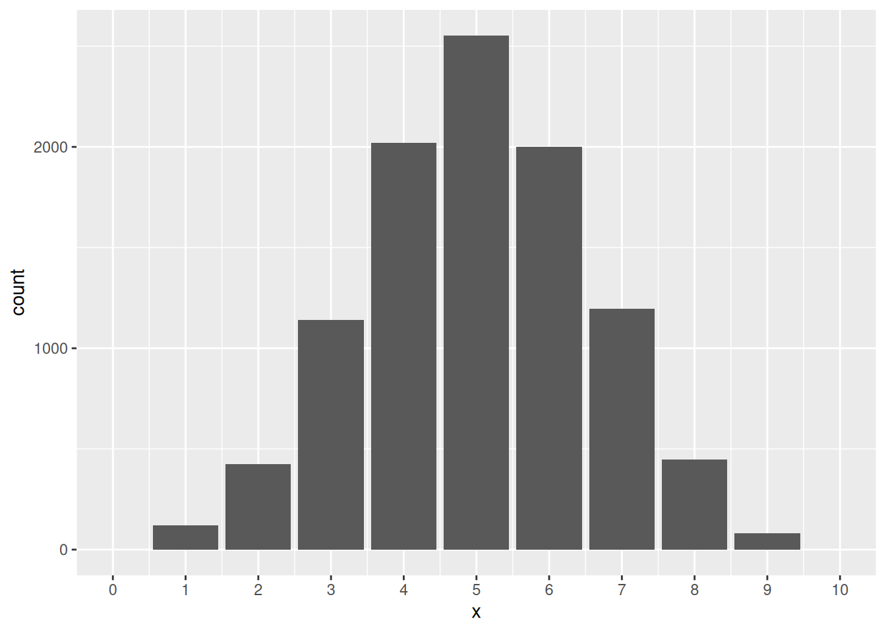
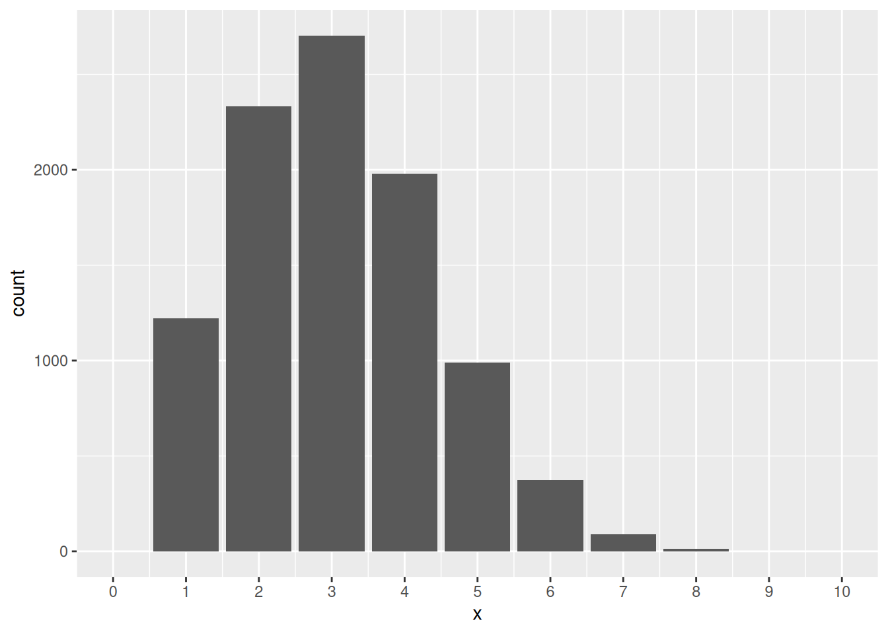
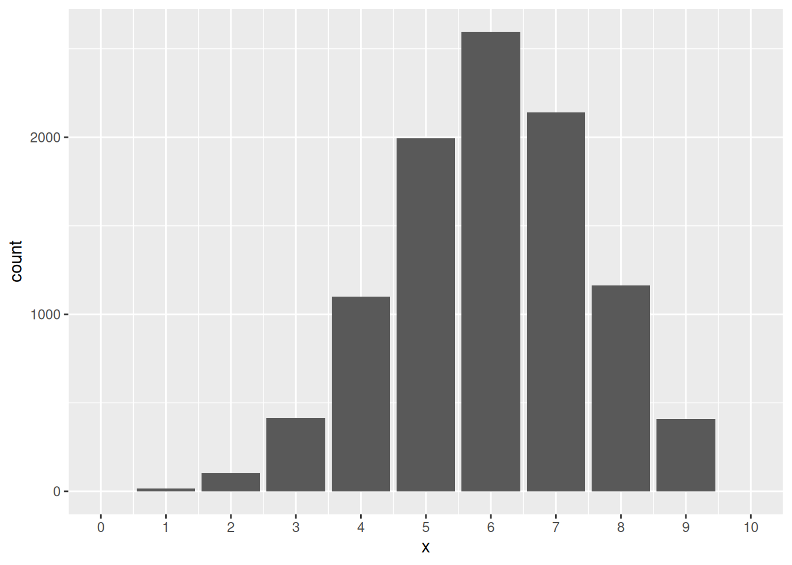
练习 5.1 某家公司生产的磁盘的次品率为 0.01，该公司按 10 个磁盘为一包的方式打包出售磁盘，并保证每包的 10 个磁盘中只要有超过 1 个次品就可以退货。那么，该公司的退货比例是多少？如果有人买了三包磁盘，其中退一包的概率是多少？
答案 5.1. 若果 \(X\) 是每包磁盘中的次品数量，则 \(X\) 是一个参数为 \((10, 0.01)\) 的二项随机变量。因此，对于 1 包磁盘而言，退货的概率为：
\(P\{X \gt 1\} = 1 - P\{X = 0\} - P\{X = 1\} \approx 0.05\)
因为每包磁盘的退货率都是 0.005 并且都是相互独立的，根据大数定律，从长远来看，该公司的退货比例为 0.5%。
根据上述情况，顾客购买的三包磁盘中可以退货的包数是一个参数为 \((3, 0.005)\) 的二项随机变量。因此，三包磁盘中，恰好有一包退货的概率为 \(\left(\begin{array}{cc} 3 \\ 1 \end{array}\right) \cdot 0.005 \cdot 0.995^2 = 0.015\)。\(\blacksquare\)
练习 5.2 一个人的眼睛的颜色由单独的一对基因决定，其中棕色基因是显性基因，蓝色基因是隐形基因。这意味着：如果一个人的基因对中的两个基因都是蓝色基因，则他的眼睛是蓝色的；而如果他的基因对中的两个基因都是棕色的或者有一个棕色基因和一个蓝色基因，则他的眼睛是棕色的。每个人的基因对都是随机从父母的基因对中选择一个基因而构成的。如果一对夫妇的眼睛都是棕色的，并且他们的第一个孩子的眼睛是蓝色的，那么他们的另外四个孩子中的两个（另外的 4 个孩子都不是双胞胎）也有蓝色眼睛的概率是多少？
答案 5.2. 首先，因为他们最大的孩子的眼睛是蓝色的，因此这对夫妇的基因对均为一个棕色基因和一个蓝色基因（对于父母中有一个人有两个棕色基因，那么每个孩子都至少会得到一个棕色基因，因此所有孩子的眼睛都是棕色的）。这对夫妇的孩子的眼睛为蓝色的概率等于孩子的基因对中的基因都是蓝色基因的概率，即 \(\frac{1}{2} \cdot \frac{1}{2} = \frac{1}{4}\)。又因为其他四个孩子中的每个孩子的眼睛是蓝色的概率均为 \(\frac{1}{4}\)，因此，他们中正好有两人的眼睛是蓝色的概率是：
\(\left(\begin{array}{cc} 4 \\ 2 \end{array}\right) \cdot (\frac{1}{4})^2 \cdot (\frac{3}{4})^2 = \frac{27}{128}\)。\(\blacksquare\)
练习 5.3 一个通信系统由 \(n\) 个组件组成，每个组件都是相互独立的，并且每个组件可以正常工作的概率都是 \(p\)。如果至少有一半的组件可以正常工作，整个系统就能够有效的运行。
答案 5.3.
因为可工作的组件数量是参数为 \((n,p)\) 的二项随机变量，因此5-组件系统可以正常工作的概率为：
\(\left(\begin{array}{cc} 5 \\ 3 \end{array}\right) p^3 (1-p)^2 + \left(\begin{array}{cc} 5 \\ 4 \end{array}\right) p^4 (1-p) + p^5\)
3-组件系统可以正常工作的概率为：
\(\left(\begin{array}{cc} 3 \\ 2 \end{array}\right) p^2 (1-p) + p^3\)
因此，当5-组件系统更稳定时，有：
\(10p^3(1−p)^2 +5p^4(1−p)+p^5 \ge 3p^2(1−p)+p^3\)
于是有：\(3(p−1)^2(2p−1) \ge 0\)，即 \(p \ge \frac{1}{2}\)。
一般来说，当且仅当 \(p \ge \frac{1}{2}\) 时，\(2k+1\)-组件系统比 \(2k-1\)-组件系统更稳定。为了证明这一点，考虑一个 \(2k+1\)-组件系统， 并令 \(X\) 表示前 \(2k-1\) 个组件构成的系统可以正常运行时其正常工作的组件数量。然后有：
\(P_{2k+1}=P\{X \ge k + 1\} + P\{X = k\}(1 − (1 − p)^2) + P\{X = k − 1\}p^2\)
因此，\(2k+1\)-组件系统可以正常运行时，需要满足如下条件：
因为 \(P_{2k-1} = P\{X \ge k\} = P\{X=k\} + P\{X \ge k+1\}\)，故而：
\[ \begin{align} P_{2k + 1} - P_{2k - 1} &= P\{X = k−1\}p^2 − (1−p)^2P\{X = k\} \\ &= \left(\begin{array}{cc} 2k - 1 \\ k - 1 \end{array}\right) p^{k-1}(1-p)^kp^2 - (1-p)^2 \left(\begin{array}{cc} 2k - 1 \\ k \end{array}\right) p^k (1-p)^{k-1} \\ &= \left(\begin{array}{cc} 2k-1 \\ k \end{array}\right) p^k (1-p)^k (p - (1-p)) \\ \ge 0 \Leftrightarrow p \ge \frac{1}{2} \quad \blacksquare \end{align} \]
练习 5.4 假设一家计算机硬件制造商生产的芯片的次品率为 10%。如果我们订购 100 个这样的芯片，我们收到的芯片中的次品数量 \(X\) 会是二项随机变量吗？
答案 5.4. 如果每个芯片可以工作的概率为 0.9 并且不同芯片之间可以工作的事件之间是相互独立的，则随机变量 \(X\) 将是一个参数为 \((100, 0.1)\) 的二项随机变量。当我们知道生产的芯片中有 10% 是次品时，\(X\) 是否是一个二项随机变量还取决于其他的因素。例如，假设在给定的一天中生产的所有芯片总是要么功能正常，要么是次品（其中 90% 的天数生产的芯片是功能正常的）。在这种情况下，如果我们知道我们的 100 个芯片都是在同一天生产的，此时芯片之间功能正常的事件并不是独立的，所以 \(X\) 将不是一个二项随机变量。事实上，在这种情况下，我们会得到：
\(P\{X = 100\} = 0.1\)
\(P\{X = 0\} = 0.9\) \(\quad \blacksquare\)
由于具有参数 \((n,p)\) 的二项随机变量 \(X\) 表示 \(n\) 个独立试验中的成功次数，其中每个试验成功的概率为 \(p\)，因此我们可以将 \(X\) 表示为：
\[ X = \sum_{i=1}^{n}{X_i} \tag{5.3}\]
其中，\(X_i = \begin{cases} 1, \quad & 第 i 次试验是成功的 \\ 0, \quad & 其它 \end{cases}\)
因为 \(X_i\) 之间是相互独立的伯努利随机变量，因此有：
\(E[X_i] = P\{X_i = 1\} = p\)
\(\textup{Var}(X_i) = E[X_i^2] - E^2[X_i] = p - p^2 = p(1-p)\)，其中因为 \(X_i^2 = X_i\)，所以 \(E[X_i^2] = E[X_i] = p\)。
根据 方程式 5.3，二项随机变量 \(X\) 的期望和方差为：
\(E[X] = \sum_{i=1}^{n}{E[X_i]} = np\)
\(\textup{Var}(X) = \sum_{i=1}^{n}{\textup{Var}(X_i)} = np(1-p)\)
如果 \(X_1\) 和 \(X_2\) 是两个独立的二项随机变量，并且其参数分别为 \((n_i, p),i=1,2\)，则 \(X_1 + X_2\) 也是一个二项随机变量并且其参数为 \((n_1 + n_2, p)\)。因为 \(X_i,i=1,2\) 代表在 \(n_i\) 个独立试验（每个试验的成功概率为 \(p\)）中成功的数量，所以 \(X_1+X_2\) 代表 \(n_1+n_2\) 个独立试验（每个试验的成功概率为 \(p\)）中成功的数量。因此，\(X_1+X_2\) 是参数为 \((n_1+n_2, p)\) 的二项随机变量。
在 R 中，如果想得到参数为 \((n,p)\) 的二项随机变量成功 \(i\) 次的概率，则可以输入：
对于相同的随机变量，如果想得到成功小于或等于 \(i\) 次的概率，则可以输入：
换句话说，如果 \(X\) 是一个二项随机变量，其参数为 \((n,p)\)，则在 R 中：
练习 5.5 如果 \(X\) 是一个参数为 \((100,0.75)\) 的二项随机变量，计算 \(P(X=70)\) 和 \(P(X \ge 80)\)？
答案 5.5. \(P(X=70)\) 的计算代码为：
\(P(X \ge 80) = 1 - P(X \le 79)\)，其计算代码为：
\(\blacksquare\)
我们还可以使用 R 来绘制二项随机变量的概率图。假设 \(X\) 是一个参数为 \((10, 4)\) 的二项随机变量，并且我们想要绘制 \(P(X=i), i=1...10\) 的概率图。我们可以使用如下的代码：
plot(i, p) 画散点图
利用如上的代码，我们可以得到如下的散点图：
如果一个取值为 \(0, 1, 2, \dots\) 的随机变量 \(X\)，其概率质量函数由下式给出，则称其为参数为 \(\lambda\) (\(\lambda > 0\)) 的泊松随机变量（Poisson random variable）：
\[ P\{X = i\} = e^{-\lambda} \frac{\lambda^i}{i!}, \quad i = 0, 1, \dots \tag{5.4}\]
符号 \(e\) 代表一个常数，约等于 \(2.7183\)。它是一个著名的数学常数，以瑞士数学家 L. Euler 命名，也是所谓自然对数的底数。
方程式 5.4 定义了一个概率质量函数，因为：
\[ \sum_{i=0}^{\infty} p(i) = e^{-\lambda} \sum_{i=0}^{\infty} \frac{\lambda^i}{i!} = e^{-\lambda} e^{\lambda} = 1 \]
当 \(\lambda = 4\) 时，该质量函数的图形如 图 5.2 所示。
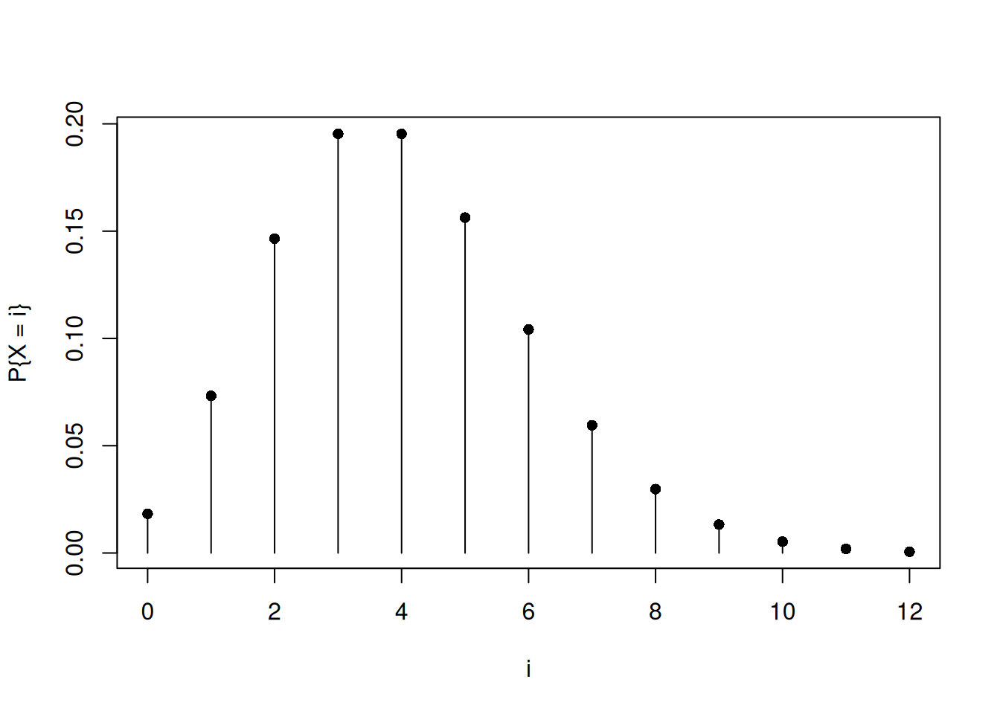
泊松概率分布是由 S. D. Poisson 在他 1837 年出版的一本关于概率论在法律诉讼、刑事审判等方面应用的书籍《Recherches sur la probabilité des jugements en matière criminelle et en matière civile》中引入的。
在确定泊松随机变量的均值和方差之前，让我们先确定它的矩母函数。
\[ \begin{align} \phi(t) &= E[e^{tX}] \\ &= \sum_{i=0}^{\infty} e^{ti} e^{-\lambda} \frac{\lambda^i}{i!} \\ &= e^{-\lambda} \sum_{i=0}^{\infty} \frac{(\lambda e^t)^i}{i!} \\ &= e^{-\lambda} e^{\lambda e^t} \\ &= \exp\{\lambda(e^t - 1)\} \end{align} \]
求导得：
\[ \phi'(t) = \lambda e^t \exp\{\lambda(e^t - 1)\} \]
\[ \phi''(t) = (\lambda e^t)^2 \exp\{\lambda(e^t - 1)\} + \lambda e^t \exp\{\lambda(e^t - 1)\} \]
在 \(t=0\) 处求值得到：
\[ E[X] = \phi'(0) = \lambda \]
\[ Var(X) = \phi''(0) - (E[X])^2 = \lambda^2 + \lambda - \lambda^2 = \lambda \]
因此，泊松随机变量的均值和方差都等于参数 \(\lambda\)。
泊松随机变量在许多领域都有广泛的应用，因为当 \(n\) 较大且 \(p\) 较小时，它可以作为参数为 \((n, p)\) 的二项随机变量的近似。为了说明这一点，假设 \(X\) 是参数为 \((n, p)\) 的二项随机变量，并令 \(\lambda = np\)。那么：
\[ \begin{align} P\{X = i\} &= \frac{n!}{(n - i)! i!} p^i (1 - p)^{n-i} \\ &= \frac{n!}{(n - i)! i!} \left(\frac{\lambda}{n}\right)^i \left(1 - \frac{\lambda}{n}\right)^{n-i} \\ &= \frac{n(n - 1) \dots (n - i + 1)}{n^i} \frac{\lambda^i}{i!} \frac{(1 - \lambda/n)^n}{(1 - \lambda/n)^i} \end{align} \]
现在，对于较大的 \(n\) 和较小的 \(p\)：
\[ \left(1 - \frac{\lambda}{n}\right)^n \approx e^{-\lambda}, \quad \frac{n(n - 1) \dots (n - i + 1)}{n^i} \approx 1, \quad \left(1 - \frac{\lambda}{n}\right)^i \approx 1 \]
因此，对于较大的 \(n\) 和较小的 \(p\)：
\[ P\{X = i\} \approx e^{-\lambda} \frac{\lambda^i}{i!} \]
换句话说，如果进行了 \(n\) 次独立的试验，每次试验成功的概率为 \(p\)，那么当 \(n\) 较大且 \(p\) 较小时，成功发生的次数近似服从均值为 \(\lambda = np\) 的泊松随机变量。
一些在实际中通常（很好地）遵循泊松概率规律（即它们通常遵循 方程式 5.4，对于某些 \(\lambda\) 值）的随机变量例子包括：
上述每一个例子以及其他许多随机变量都是近似泊松分布的，原因相同——即因为泊松分布是对二项分布的近似。例如，我们可以假设每页打印的每个字母都有一个很小的概率 \(p\) 被印错，因此一页上的错别字数量近似服从均值为 \(\lambda = np\) 的泊松分布，其中 \(n\) 是该页上字母的（很大）数量。同样，我们可以假设特定社区中的每个人都有一个很小的概率 \(p\) 活到 100 岁，那么活到 100 岁的人数将近似服从均值为 \(np\) 的泊松分布，其中 \(n\) 是该社区的人口总数。我们把为什么例 3 到例 6 中的随机变量也应该近似服从泊松分布的推理留给读者。
练习 5.6 假设某段高速公路上每周发生的交通事故平均数为 3 起。计算本周至少发生 1 起事故的概率。
答案 5.6. 令 \(X\) 表示本周该段高速公路上发生的交通事故数量。因为可以合理假设有大量的车辆经过该路段，且每辆车发生事故的概率都很小，所以事故数量应近似服从泊松分布。因此：
\[ \begin{align} P\{X \geq 1\} &= 1 - P\{X = 0\} \\ &= 1 - e^{-3} \frac{3^0}{0!} \\ &= 1 - e^{-3} \\ &\approx .9502 \end{align} \] \(\blacksquare\)
练习 5.7 假设某台机器生产出的零件为次品的概率为 .1。求 10 个零件的样本中最多包含一个次品的概率。假设连续生产出的零件质量是相互独立的。
答案 5.7. 准确的概率是 \(\binom{10}{0} (.1)^0 (.9)^{10} + \binom{10}{1} (.1)^1 (.9)^9 = .7361\)，而泊松近似给出的值为：
\[ e^{-1} \frac{1^0}{0!} + e^{-1} \frac{1^1}{1!} = 2e^{-1} \approx .7358 \] \(\blacksquare\)
练习 5.8 考虑一个实验，统计 1 克放射性物质在 1 秒间隔内释放出的 \(\alpha\)-粒子数量。如果根据以往经验知道，平均释放出 3.2 个此类 \(\alpha\)-粒子，那么出现不超过 2 个 \(\alpha\)-粒子的良好近似概率是多少？
答案 5.8. 如果我们把 1 克放射性物质看作由大量 \(n\) 个原子组成，每个原子在所考虑的 1 秒内都有 \(3.2/n\) 的概率衰变并释放出一个 \(\alpha\)-粒子，那么我们可以看到，在非常接近的近似下，释放出的 \(\alpha\)-粒子数量将是参数为 \(\lambda = 3.2\) 的泊松随机变量。因此，所需的概率为：
\[ \begin{align} P\{X \leq 2\} &= e^{-3.2} + 3.2 e^{-3.2} + \frac{(3.2)^2}{2} e^{-3.2} \\ &= .382 \end{align} \] \(\blacksquare\)
练习 5.9 如果一家保险公司每天处理的索赔平均数为 5 份，那么每天索赔少于 3 份的比例是多少？在接下来的 5 天中，恰好有 3 天出现 4 份索赔的概率是多少？假设不同日期的索赔数量是独立的。
答案 5.9. 因为公司可能承保了大量的客户，每个客户在任何特定的一天都有很小的概率提出索赔，所以可以合理假设每天处理的索赔数量（记为 \(X\)）是一个泊松随机变量。由于 \(E(X) = 5\)，在任何给定的一天索赔少于 3 份的概率为：
\[ \begin{align} P\{X \leq 3\} &= P\{X = 0\} + P\{X = 1\} + P\{X = 2\} \\ &= e^{-5} + e^{-5} \frac{5^1}{1!} + e^{-5} \frac{5^2}{2!} \\ &= \frac{37}{2} e^{-5} \\ &\approx .1247 \end{align} \]
由于任何给定的一天索赔少于 3 份的概率为 .125，根据大数定律，长期来看，有 12.5% 的天数索赔会少于 3 份。
根据连续天数内索赔数量相互独立的假设，在 5 天的时间跨度内，恰好有 4 份索赔的天数是一个参数为 5 且 \(p = P\{X = 4\}\) 的二项随机变量。因为：
\[ P\{X = 4\} = e^{-5} \frac{5^4}{4!} \approx .1755 \]
所以接下来的 5 天中恰好有 3 天会出现 4 份索赔的概率等于：
\[ \binom{5}{3} (.1755)^3 (.8245)^2 \approx .0367 \] \(\blacksquare\)
泊松近似结果可以被证明在比前述更通用的条件下仍然有效。例如，假设要进行 \(n\) 次独立的试验，第 \(i\) 次试验成功的概率为 \(p_i\) (\(i = 1, \dots, n\))。那么可以证明，如果 \(n\) 很大且每个 \(p_i\) 很小，那么成功的试验总数近似服从均值等于 \(\sum_{i=1}^n p_i\) 的泊松分布。事实上，即使试验不是独立的，只要它们的依赖性较“弱”，这一结果有时仍然成立。例如，考虑下面的例子。
练习 5.10 在一个聚会上，\(n\) 个人把他们的帽子放在房间中央，帽子被混在了一起。每个人随机挑选一顶帽子。如果 \(X\) 表示挑选到自己帽子的人数，那么对于较大的 \(n\)，证明 \(X\) 近似服从均值为 1 的泊松分布。
答案 5.10. 为了理解为什么这可能是真的，令：
\[ X_i = \begin{cases} 1, & \text{如果第 } i \text{ 个人选中了他自己的帽子} \\ 0, & \text{否则} \end{cases} \]
那么我们可以将 \(X\) 表示为：
\[ X = X_1 + \dots + X_n \]
因此 \(X\) 可以看作是 \(n\) 次“试验”中“成功”的次数，其中如果第 \(i\) 个人选中了自己的帽子，则称试验 \(i\) 成功。现在，由于第 \(i\) 个人等可能地选中 \(n\) 顶帽子中的任何一顶，而其中一顶是他自己的，所以：
\[ P\{X_i = 1\} = \frac{1}{n} \tag{5.5}\]
现在假设 \(i \neq j\)，并考虑在已知第 \(j\) 个人确实选中了他自己的帽子的条件下，第 \(i\) 个人选中自己帽子的条件概率——即考虑 \(P\{X_i = 1 | X_j = 1\}\)。现在，已知第 \(j\) 个人确实选中了他自己的帽子，那么第 \(i\) 个人将等可能地选中剩下的 \(n - 1\) 顶帽子中的任何一顶，其中一顶是他自己的。因此：
\[ P\{X_i = 1 | X_j = 1\} = \frac{1}{n - 1} \tag{5.6}\]
因此，我们从 方程式 5.5 和 方程式 5.6 可以看到，虽然试验不是独立的，但它们的依赖性相当弱［因为如果上述条件概率等于 \(1/n\) 而不是 \(1/(n - 1)\)，那么试验 \(i\) 和 \(j\) 将会是独立的］；因此 \(X\) 近似具有泊松分布也就不足为奇了。\(E[X] = 1\) 这一事实由下式得出：
\[ \begin{align} E[X] &= E[X_1 + \dots + X_n] \\ &= E[X_1] + \dots + E[X_n] \\ &= n \left(\frac{1}{n}\right) = 1 \end{align} \]
最后一个等号是根据 方程式 5.5 得出的，即 \(E[X_i] = P\{X_i = 1\} = 1/n\)。 \(\blacksquare\)
泊松分布具有再生性：独立泊松随机变量的和仍然是泊松随机变量。为了说明这一点，假设 \(X_1\) 和 \(X_2\) 是均值分别为 \(\lambda_1\) 和 \(\lambda_2\) 的独立泊松随机变量。那么 \(X_1 + X_2\) 的矩母函数如下：
\[ \begin{align} E[e^{t(X_1 + X_2)}] &= E[e^{tX_1} e^{tX_2}] \\ &= E[e^{tX_1}] E[e^{tX_2}] \quad (\text{由于独立性}) \\ &= \exp\{\lambda_1(e^t - 1)\} \exp\{\lambda_2(e^t - 1)\} \\ &= \exp\{(\lambda_1 + \lambda_2)(e^t - 1)\} \end{align} \]
因为 \(\exp\{(\lambda_1 + \lambda_2)(e^t - 1)\}\) 是均值为 \(\lambda_1 + \lambda_2\) 的泊松随机变量的矩母函数，根据矩母函数唯一确定分布的事实，我们可以得出结论：\(X_1 + X_2\) 是均值为 \(\lambda_1 + \lambda_2\) 的泊松随机变量。
练习 5.11 已知某工厂每天生产的次品音响数量服从均值为 4 的泊松分布。在 2 天的时间跨度内，次品音响数量不超过 3 个的概率是多少？
答案 5.11. 假设第一天生产的次品数量 \(X_1\) 与第二天生产的数量 \(X_2\) 相互独立，那么 \(X_1 + X_2\) 是均值为 8 的泊松分布。因此：
\[ P\{X_1 + X_2 \leq 3\} = \sum_{i=0}^3 e^{-8} \frac{8^i}{i!} = .04238 \] \(\blacksquare\)
现在考虑这样一种情况：事件发生的总次数是一个随机变量（记为 \(N\)），并假设每一个事件独立地属于类型 1（概率为 \(p\)）或类型 2（概率为 \(1 - p\)）。令 \(N_1\) 和 \(N_2\) 分别表示发生的类型 1 和类型 2 事件的数量（因此 \(N = N_1 + N_2\)）。如果 \(N\) 服从均值为 \(\lambda\) 的泊松分布，那么 \(N_1\) 和 \(N_2\) 的联合概率质量函数推导如下：
\[ \begin{align} P\{N_1 = n, N_2 = m\} &= P\{N_1 = n, N_2 = m, N = n + m\} \\ &= P\{N_1 = n, N_2 = m | N = n + m\} P\{N = n + m\} \\ &= P\{N_1 = n, N_2 = m | N = n + m\} e^{-\lambda} \frac{\lambda^{n+m}}{(n + m)!} \end{align} \]
现在，已知共有 \(n + m\) 个事件，因为每一个事件都独立地以概率 \(p\) 属于类型 1，所以在给定条件下，恰好有 \(n\) 个类型 1 事件（以及 \(m\) 个类型 2 事件）的条件概率等于参数为 \((n + m, p)\) 的二项随机变量等于 \(n\) 的概率。因此：
\[ \begin{align} P\{N_1 = n, N_2 = m\} &= \frac{(n + m)!}{n! m!} p^n (1 - p)^m e^{-\lambda} \frac{\lambda^{n+m}}{(n + m)!} \\ &= e^{-\lambda p} \frac{(\lambda p)^n}{n!} e^{-\lambda(1-p)} \frac{(\lambda(1 - p))^m}{m!} \end{align} \tag{5.7}\]
因此 \(N_1\) 的概率质量函数为：
\[ \begin{align} P\{N_1 = n\} &= \sum_{m=0}^{\infty} P\{N_1 = n, N_2 = m\} \\ &= e^{-\lambda p} \frac{(\lambda p)^n}{n!} \sum_{m=0}^{\infty} e^{-\lambda(1-p)} \frac{(\lambda(1 - p))^m}{m!} \\ &= e^{-\lambda p} \frac{(\lambda p)^n}{n!} \end{align} \tag{5.8}\]
类似地：
\[ P\{N_2 = m\} = \sum_{n=0}^{\infty} P\{N_1 = n, N_2 = m\} = e^{-\lambda(1-p)} \frac{(\lambda(1 - p))^m}{m!} \tag{5.9}\]
由 方程式 5.7、方程式 5.8 和 方程式 5.9 得出，\(N_1\) 和 \(N_2\) 是独立的泊松随机变量，均值分别为 \(\lambda p\) 和 \(\lambda(1 - p)\)。
上述结果可以推广到泊松数量的事件可以被分类到 \(r\) 个类别中的任何一个的情况，从而得出泊松分布的以下重要性质：如果均值为 \(\lambda\) 的泊松数量的事件中，每一个都独立地被分类为 \(1, \dots, r\) 类型之一，其概率分别为 \(p_1, \dots, p_r\) (\(\sum_{i=1}^r p_i = 1\))，那么类型 \(1, \dots, r\) 事件的数量是独立的泊松随机变量，其均值分别为 \(\lambda p_1, \dots, \lambda p_r\)。
R 计算泊松概率的方式与计算二项概率的方式类似。如果 \(X\) 是参数为 \(\lambda\) 的泊松随机变量，那么：
dpois(i, lambda) 返回 \(P(X = i)\)ppois(i, lambda) 返回 \(P(X \leq i)\)例如，我们计算均值为 40 的泊松随机变量小于或等于 50 的概率如下：
R 可以用来绘制泊松质量函数。假设我们想要绘制当 \(X\) 是均值为 10 的泊松分布时 \(P(X = i), i = 0, \dots, 25\) 的图形。我们只需输入以下内容：
按回车键后会产生类似于 图 5.3 的输出。
一个箱子中包含 \(N + M\) 节电池，其中 \(N\) 节质量合格，\(M\) 节为次品。随机抽取（无放回抽样）一个大小为 \(n\) 的样本，这里的抽样是指从 \(N+M\) 个子集中等可能地抽取任意一个大小为 \(n\) 的子集。如果我们令 \(X\) 表示样本中合格电池的数量，那么：
\[ P\{X = i\} = \frac{\binom{N}{i} \binom{M}{n-i}}{\binom{N+M}{n}}, \quad i = 0, 1, \dots, \min(N, n) \tag{5.10}\]
任何概率质量函数由 方程式 5.10 给出的随机变量 \(X\) 都被称为参数为 \(N, M, n\) 的超几何随机变量（hypergeometric random variable）。
练习 5.12 一个由 6 个组件组成的系统，其组件是从一箱 20 个旧组件中随机选取的。如果这 20 个组件中有 15 个处于工作状态，且系统中至少有 4 个组件处于工作状态时系统才能正常运行，那么系统正常运行的概率是多少？
答案 5.12. 如果 \(X\) 是所选出的工作组件的数量，那么 \(X\) 是参数为 \(15, 5, 6\) 的超几何随机变量。系统正常运行的概率为：
\[ \begin{align} P\{X \geq 4\} &= \sum_{i=4}^6 P\{X = i\} \\ &= \frac{\binom{15}{4} \binom{5}{2} + \binom{15}{5} \binom{5}{1} + \binom{15}{6} \binom{5}{0}}{\binom{20}{6}} \\ &\approx .8687 \end{align} \] \(\blacksquare\)
为了计算概率质量函数由 方程式 5.10 给出的超几何随机变量的均值和方差，我们可以设想电池是按顺序抽取的，并令：
\[ X_i = \begin{cases} 1, & \text{如果第 } i \text{ 次抽取的电池是合格的} \\ 0, & \text{否则} \end{cases} \]
现在，由于第 \(i\) 次抽取等可能地选中 \(N + M\) 节电池中的任意一节，而其中 \(N\) 节是合格的，因此：
\[ P\{X_i = 1\} = \frac{N}{N + M} \tag{5.11}\]
此外，对于 \(i \neq j\)：
\[ \begin{align} P\{X_i = 1, X_j = 1\} &= P\{X_i = 1\} P\{X_j = 1 | X_i = 1\} \\ &= \frac{N}{N + M} \frac{N - 1}{N + M - 1} \end{align} \tag{5.12}\]
这是因为，已知第 \(i\) 次抽取的电池是合格的，那么第 \(j\) 次抽取将等可能地从剩下的 \(N + M - 1\) 节电池中抽取，而其中 \(N - 1\) 节是合格的。
为了计算样本大小为 \(n\) 时合格电池数量 \(X\) 的均值和方差，我们利用表示式：
\[ X = \sum_{i=1}^n X_i \]
得到：
\[ E[X] = \sum_{i=1}^n E[X_i] = \sum_{i=1}^n P\{X_i = 1\} = \frac{nN}{N + M} \tag{5.13}\]
此外，利用独立随机变量和的方差公式（见 推论 4.2）：
\[ Var(X) = \sum_{i=1}^n Var(X_i) + 2 \sum_{1 \leq i < j \leq n} Cov(X_i, X_j) \tag{5.14}\]
由于 \(X_i\) 是伯努利随机变量，因此：
\[ Var(X_i) = P\{X_i = 1\} (1 - P\{X_i = 1\}) = \frac{N}{N + M} \frac{M}{N + M} \tag{5.15}\]
此外，对于 \(i < j\)：
\[ Cov(X_i, X_j) = E[X_i X_j] - E[X_i] E[X_j] \]
由于 \(X_i\) 和 \(X_j\) 都是伯努利（即 0-1）随机变量，因此 \(X_i X_j\) 也是伯努利随机变量，所以：
\[ \begin{align} E[X_i X_j] &= P\{X_i X_j = 1\} \\ &= P\{X_i = 1, X_j = 1\} \\ &= \frac{N(N - 1)}{(N + M)(N + M - 1)} \quad (\text{由 @eq-5_3_3 得出}) \end{align} \tag{5.16}\]
因此，从 方程式 5.11 和前述内容我们可以看到，对于 \(i \neq j\)：
\[ \begin{align} Cov(X_i, X_j) &= \frac{N(N - 1)}{(N + M)(N + M - 1)} - \left(\frac{N}{N + M}\right)^2 \\ &= \frac{-NM}{(N + M)^2 (N + M - 1)} \end{align} \]
由于 方程式 5.14 的右侧第二个求和项共有 \(\binom{n}{2}\) 项，由 方程式 5.15 得到：
\[ \begin{align} Var(X) &= \frac{nNM}{(N + M)^2} - \frac{n(n - 1)NM}{(N + M)^2 (N + M - 1)} \\ &= \frac{nNM}{(N + M)^2} \left(1 - \frac{n - 1}{N + M - 1}\right) \end{align} \tag{5.17}\]
如果我们令 \(p = N/(N + M)\) 表示箱子中合格电池的比例，那么我们可以将 方程式 5.13 和 方程式 5.17 改写如下：
\[ E[X] = np \] \[ Var(X) = np(1 - p) \left[1 - \frac{n - 1}{N + M - 1}\right] \]
应当指出，对于固定的 \(p\)，随着 \(N + M \to \infty\)，\(Var(X)\) 会收敛到 \(np(1 - p)\)，即参数为 \((n, p)\) 的二项随机变量的方差。（为什么这是预料之中的？）
练习 5.13 假设某地区栖息着未知数量 \(N\) 的动物。为了获得关于种群规模的信息，生态学家经常进行如下实验：他们首先捕获数量为 \(r\) 的动物，给它们做上某种标记，然后放掉。在标记过的动物有时间分散到整个地区之后，再次捕获数量为 \(n\) 的动物。令 \(X\) 表示第二次捕获中带标记动物的数量。如果我们假设该地区动物种群在两次捕获期间保持不变，并且每次捕获动物时，任何尚未被捕获的动物被捕获的可能性都是相等的，那么 \(X\) 是一个超几何随机变量，使得：
\[ P\{X = i\} = \frac{\binom{r}{i} \binom{N-r}{n-i}}{\binom{N}{n}} \equiv P_i(N) \]
答案 5.13. 现在假设观察到 \(X\) 等于 \(i\)。也就是说，第二次捕获的动物中带标记的比例为 \(i/n\)。将此作为该地区带标记动物比例 \(r/N\) 的近似，我们得到种群规模的估计值 \(rn/i\)。例如，如果最初捕获了 \(r = 50\) 只动物并做了标记放回，随后捕获了 \(n = 100\) 只动物中发现 \(X = 25\) 只有标记，那么我们会估计该地区的动物数量约为 200。 \(\blacksquare\)
二项随机变量和超几何分布之间存在一种关系，这对于我们在后续章节中开发涉及两个二项总体（populations）的统计检验非常有用。
练习 5.14 令 \(X\) 和 \(Y\) 是参数分别为 \((n, p)\) 和 \((m, p)\) 的独立二项随机变量。在已知 \(X + Y = k\) 的条件下，\(X\) 的条件概率质量函数如下：
\[ \begin{align} P\{X = i | X + Y = k\} &= \frac{P\{X = i, X + Y = k\}}{P\{X + Y = k\}} \\ &= \frac{P\{X = i, Y = k - i\}}{P\{X + Y = k\}} \\ &= \frac{P\{X = i\} P\{Y = k - i\}}{P\{X + Y = k\}} \\ &= \frac{\binom{n}{i} p^i (1 - p)^{n-i} \binom{m}{k-i} p^{k-i} (1 - p)^{m-(k-i)}}{\binom{n+m}{k} p^k (1 - p)^{n+m-k}} \\ &= \frac{\binom{n}{i} \binom{m}{k-i}}{\binom{n+m}{k}} \end{align} \]
其中，倒数第二个等号利用了 \(X + Y\) 是参数为 \((n + m, p)\) 的二项分布的事实。因此，我们看到在已知 \(X + Y\) 值的条件下，\(X\) 的条件分布是超几何分布。
答案 5.14. 值得注意的是，上述结果是非常直观的。假设进行了 \(n + m\) 次独立试验，每次试验成功的概率相同；令 \(X\) 为前 \(n\) 次试验中的成功次数，并令 \(Y\) 为最后 \(m\) 次试验中的成功次数。已知 \(n + m\) 次试验中共有 \(k\) 次成功，那么这 \(k\) 次成功的试验子集等可能地由 \(n + m\) 次试验中的任何 \(k\) 个试验组成。也就是说，\(k\) 次成功试验分布在从 \(n + m\) 次试验中随机选出的 \(k\) 个位置，因此属于前 \(n\) 次试验的数量服从超几何分布。 \(\blacksquare\)
超几何概率可以使用 R 来计算，dhyper(i, N, M, n) 和 phyper(i, N, M, n) 分别给出参数为 \((N, M, n)\) 的超几何随机变量分别等于 \(i\) 或小于等于 \(i\) 的概率。因此，从一个包含 8 个红球和 22 个蓝球的瓮中随机选取 10 个球，包含恰好 4 个红球以及最多 4 个红球的概率可以通过如下方式获得：
因此，选中恰好 4 个红球的概率约为 17.38%，选中最多 4 个红球的概率约为 94.37%。
如果一个随机变量 \(X\) 的概率密度函数由下式给出，则称其在区间 \([\alpha, \beta]\) 上服从均匀分布（uniformly distributed）：
\[ f(x) = \begin{cases} \frac{1}{\beta - \alpha}, & \text{如果 } \alpha \leq x \leq \beta \\ 0, & \text{否则} \end{cases} \]
该函数的图形如 图 5.5 所示。注意，上述函数满足概率密度函数的要求，因为：
\[ \frac{1}{\beta - \alpha} \int_{\alpha}^{\beta} dx = 1 \]
均匀分布出现在以下实际情况中：当我们假设某个随机变量在区间 \([\alpha, \beta]\) 内的任何值附近出现的可能性相等时。
\(X\) 落在 \([\alpha, \beta]\) 的任何子区间内的概率等于该子区间的长度除以整个区间 \([\alpha, \beta]\) 的长度。这是因为当 \([a, b]\) 是 \([\alpha, \beta]\) 的子区间时（见 图 5.4）：
\[ \begin{align} P\{a < X < b\} &= \frac{1}{\beta - \alpha} \int_a^b dx \\ &= \frac{b - a}{\beta - \alpha} \end{align} \]
alpha <- 2
beta <- 8
a <- 4
b <- 6
x <- seq(0, 10, 0.01)
f <- ifelse(x >= alpha & x <= beta, 1/(beta - alpha), 0)
plot(x, f, type = "l", ylim = c(0, 0.2), xlab = "x", ylab = "f(x)", main = "")
abline(h = 0)
# Highlight area between a and b
x_sub <- seq(a, b, 0.01)
polygon(c(a, x_sub, b), c(0, rep(1/(beta-alpha), length(x_sub)), 0), col = "skyblue")
segments(alpha, 0, alpha, 1/(beta - alpha), lty = 2)
segments(beta, 0, beta, 1/(beta - alpha), lty = 2)
text(alpha, -0.01, expression(alpha))
text(beta, -0.01, expression(beta))
text(a, -0.01, "a")
text(b, -0.01, "b")
text((a+b)/2, 0.05, expression(frac(b-a, beta-alpha)))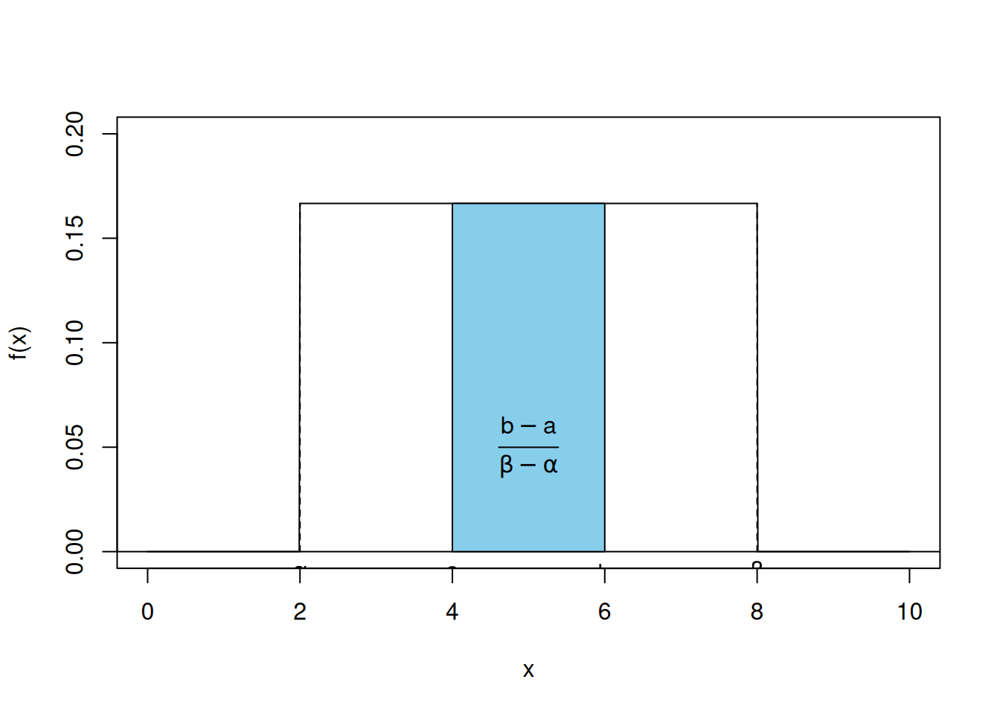
alpha <- 2
beta <- 8
x <- seq(0, 10, 0.01)
f <- ifelse(x >= alpha & x <= beta, 1/(beta - alpha), 0)
plot(x, f, type = "l", ylim = c(0, 0.2), xlab = "x", ylab = "f(x)", main = "")
abline(h = 0)
segments(alpha, 0, alpha, 1/(beta - alpha), lty = 2)
segments(beta, 0, beta, 1/(beta - alpha), lty = 2)
text(alpha, -0.01, expression(alpha))
text(beta, -0.01, expression(beta))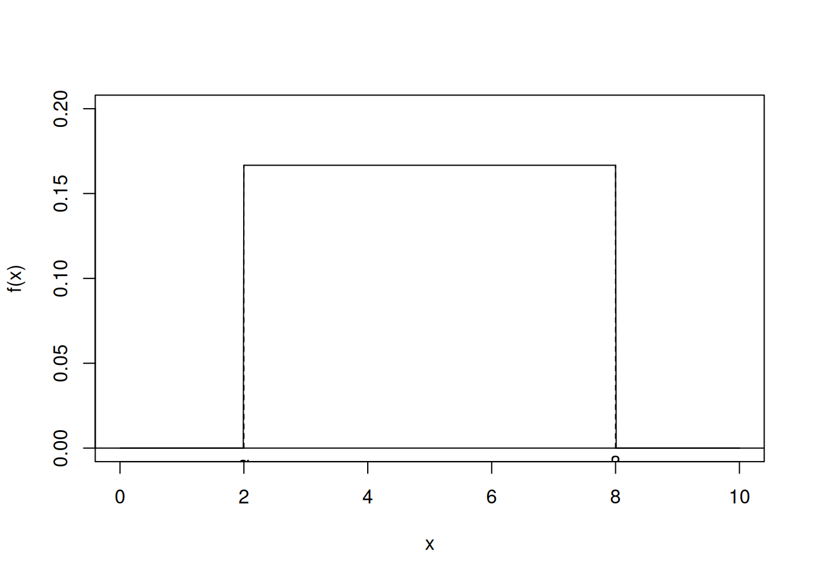
练习 5.15 如果 \(X\) 在区间 \([0, 10]\) 上服从均匀分布，计算以下概率：(a) \(2 < X < 9\), (b) \(1 < X < 4\), (c) \(X < 5\), (d) \(X > 6\)。
答案 5.15. 相应的答案分别是 (a) \(7/10\), (b) \(3/10\), (c) \(5/10\), (d) \(4/10\)。 \(\blacksquare\)
练习 5.16 公交车从早上 7:00 开始每隔 15 分钟到达一个特定的站点。也就是说，它们分别在 7:00, 7:15, 7:30, 7:45 等时间到达。如果一名乘客到达该站点的时刻在 7:00 到 7:30 之间均匀分布，求他等车时间满足以下条件的概率： (a) 少于 5 分钟； (b) 至少 12 分钟。
答案 5.16. 令 \(X\) 表示乘客到达站点的时刻（7:00 之后的分钟数）。由于 \(X\) 是区间 \((0, 30)\) 上的均匀随机变量，因此如果乘客在 7:10 到 7:15 之间或 7:25 到 7:30 之间到达，他等车的时间将少于 5 分钟。因此，(a) 的概率为：
\[ P\{10 < X < 15\} + P\{25 < X < 30\} = \frac{5}{30} + \frac{5}{30} = \frac{1}{3} \]
同样地，如果他在 7:00 到 7:03 之间或 7:15 到 7:18 之间到达，他将不得不等待至少 12 分钟，因此 (b) 的概率为：
\[ P\{0 < X < 3\} + P\{15 < X < 18\} = \frac{3}{30} + \frac{3}{30} = \frac{1}{5} \] \(\blacksquare\)
均匀分布随机变量 \(X \sim U[\alpha, \beta]\) 的均值为：
\[ \begin{align} E[X] &= \int_{\alpha}^{\beta} \frac{x}{\beta - \alpha} dx \\ &= \frac{\beta^2 - \alpha^2}{2(\beta - \alpha)} \\ &= \frac{(\beta - \alpha)(\beta + \alpha)}{2(\beta - \alpha)} \end{align} \]
即：
\[ E[X] = \frac{\alpha + \beta}{2} \]
换句话说，均匀 \([\alpha, \beta]\) 随机变量的期望值等于区间的中心点，这显然符合预期。（为什么？）
其方差计算如下：
\[ \begin{align} E[X^2] &= \frac{1}{\beta - \alpha} \int_{\alpha}^{\beta} x^2 dx \\ &= \frac{\beta^3 - \alpha^3}{3(\beta - \alpha)} \\ &= \frac{\beta^2 + \alpha \beta + \alpha^2}{3} \end{align} \]
其中最后一个等号利用了 \(\beta^3 - \alpha^3 = (\beta^2 + \alpha \beta + \alpha^2)(\beta - \alpha)\)。
因此：
\[ \begin{align} Var(X) &= \frac{\beta^2 + \alpha \beta + \alpha^2}{3} - \left(\frac{\alpha + \beta}{2}\right)^2 \\ &= \frac{4(\beta^2 + \alpha \beta + \alpha^2) - 3(\alpha^2 + 2\alpha \beta + \beta^2)}{12} \\ &= \frac{\alpha^2 + \beta^2 - 2\alpha \beta}{12} \\ &= \frac{(\beta - \alpha)^2}{12} \end{align} \]
练习 5.17 半导体二极管中的电流通常使用 Shockley 方程测量：
\[ I = I_0 (e^{aV} - 1) \]
其中 \(V\) 是二极管两端的电压；\(I_0\) 是反向电流；\(a\) 是一个常数；\(I\) 是产生的二极管电流。如果 \(a = 5, I_0 = 10^{-6}\)，且 \(V\) 在 \((1, 3)\) 上均匀分布，求 \(E[I]\)。
答案 5.17. \[ \begin{align} E[I] &= E[I_0 (e^{aV} - 1)] \\ &= I_0 E[e^{aV} - 1] \\ &= I_0 (E[e^{aV}] - 1) \\ &= 10^{-6} \int_1^3 e^{5x} \frac{1}{2} dx - 10^{-6} \\ &= 10^{-7} (e^{15} - e^5) - 10^{-6} \\ &\approx .3269 \end{align} \] \(\blacksquare\)
均匀 \((0, 1)\) 随机变量的值被称为随机数（random number）。大多数计算机系统都有一个内置子程序，用于生成（高度近似的）独立随机数序列——例如，表格 5.1 给出了的一组独立随机数。随机数在概率和统计学中非常有用，因为它们的使用使人能够通过经验估算出各种概率和期望值。
| .0483 | .9273 | .0308 | .5971 | .8167 |
| .3612 | .1630 | .7517 | .6899 | .1190 |
| .2735 | .4373 | .1974 | .2917 | .0810 |
| .5671 | .3562 | .0123 | .4235 | .9308 |
| .6371 | .0035 | .1600 | .3320 | .1120 |
作为随机数应用的一个例子，假设一个医学中心正计划测试一种旨在降低使用者血液胆固醇水平的新药。为了测试其有效性，医学中心招募了 1000 名志愿者作为试验对象。考虑到受试者的胆固醇水平可能受到试验之外因素（如天气条件变化）的影响，决定将志愿者分为两组，每组 500 人——一组为治疗组（treatment group），给予该药物；另一组为对照组（control group），给予安慰剂。志愿者和药物管理人员都不会被告知谁在哪个组（这种试验被称为双盲试验（double-blind test））。剩下要做的就是确定哪些志愿者应该组成治疗组。显然，人们希望治疗组和对照组在各方面尽可能相似，唯一的区别是第一组将接受药物，而另一组将接受安慰剂；这样就可以得出结论，反应中的任何差异确实是由药物引起的。大家普遍认为，实现这一点的最佳方法是以完全随机的方式选择 500 名志愿者进入治疗组。也就是说，选择应当使得这 1000 个人中每一个包含 500 名志愿者的子集都有同等的可能性被选为治疗组。这该如何实现呢？
练习 5.18 [选择随机子集] 从 \(n\) 个元素（编号为 \(1, 2, \dots, n\)）的集合中，假设我们想要生成一个大小为 \(k\) 的随机子集，其选择方式使得 \(\binom{n}{k}\) 个子集中的每一个被选为该子集的可能性都相等。我们该如何实现？
答案 5.18. 为了回答这个问题，让我们倒过来思考，假设我们已经随机生成了这样一个大小为 \(k\) 的子集。现在对于每一个 \(j = 1, \dots, n\)，我们设：
\[ I_j = \begin{cases} 1, & \text{如果元素 } j \text{ 在子集中} \\ 0, & \text{否则} \end{cases} \]
并计算 \(I_j\) 在给定 \(I_1, \dots, I_{j-1}\) 条件下的条件分布。首先，注意元素 1 在大小为 \(k\) 的子集中的概率显然是 \(k/n\)（这可以通过注意元素 1 成为第 \(j\) 个被选中元素的概率为 \(1/n\), \(j = 1, \dots, k\) 来看出；或者通过注意导致元素 1 被选中的随机选择结果的比例为 \(\binom{1}{1}\binom{n-1}{k-1} / \binom{n}{k} = k/n\) 来看出）。因此，我们有：
\[ P\{I_1 = 1\} = k/n \tag{5.18}\]
为了计算在已知 \(I_1\) 的条件下元素 2 在子集中的条件概率，注意如果 \(I_1 = 1\)，那么除了元素 1 之外，子集剩下的 \(k - 1\) 个成员将从剩下的 \(n - 1\) 个元素中“随机”选出（意思是编号为 \(2, \dots, n\) 的大小为 \(k - 1\) 的每个子集都有同等的可能性成为子集的其他元素）。因此，我们有：
\[ P\{I_2 = 1 | I_1 = 1\} = \frac{k - 1}{n - 1} \tag{5.19}\]
同样地，如果元素 1 不在该子集中，那么该子集的 \(k\) 个成员将从另外 \(n - 1\) 个元素中“随机”选出，因此：
\[ P\{I_2 = 1 | I_1 = 0\} = \frac{k}{n - 1} \tag{5.20}\]
\[ P\{I_2 = 1 | I_1\} = \frac{k - I_1}{n - 1} \]
一般而言，我们有：
\[ P\{I_j = 1 | I_1, \dots, I_{j-1}\} = \frac{k - \sum_{i=1}^{j-1} I_i}{n - j + 1}, \quad j = 2, \dots, n \tag{5.21}\]
前述公式成立是因为 \(\sum_{i=1}^{j-1} I_i\) 代表了包含在子集中的前 \(j - 1\) 个元素的数量，因此在已知 \(I_1, \dots, I_{j-1}\) 的条件下，剩下 \(k - \sum_{i=1}^{j-1} I_i\) 个元素将从剩下的 \(n - (j - 1)\) 个元素中选出。
由于当 \(U\) 是均匀 \((0, 1)\) 随机变量时，\(P\{U < a\} = a\), \(0 \leq a \leq 1\)，方程式 5.18 和 方程式 5.21 引导出了从 \(n\) 个元素的集合中生成大小为 \(k\) 的随机子集的如下方法：即生成一个（最多包含 \(n\) 个）随机数序列 \(U_1, U_2, \dots\) 并设：
\[ I_1 = \begin{cases} 1, & \text{如果 } U_1 < \frac{k}{n} \\ 0, & \text{否则} \end{cases} \]
\[ I_2 = \begin{cases} 1, & \text{如果 } U_2 < \frac{k - I_1}{n - 1} \\ 0, & \text{否则} \end{cases} \]
\[ \vdots \]
\[ I_j = \begin{cases} 1, & \text{如果 } U_j < \frac{k - I_1 - \dots - I_{j-1}}{n - j + 1} \\ 0, & \text{否则} \end{cases} \]
当 \(\sum_{i=1}^j I_i = k\) 时，该过程停止，随机子集由 \(I\) 值为 1 的 \(k\) 个元素组成。也就是说，\(S = \{i : I_i = 1\}\) 即为该子集。
例如，如果 \(k = 2, n = 5\)，那么 图 5.6 的树状图说明了上述技术。随机子集 \(S\) 由树上的最终位置给出。注意，停在任何给定最终位置的概率等于 1/10，这可以通过将穿过该树到达所需终点的概率相乘来看出。例如，停在标记为 \(S = \{2, 4\}\) 的点的概率是 \(P\{U_1 > .4\} P\{U_2 < .5\} P\{U_3 > 1/3\} P\{U_4 > 1/2\} = (.6)(.5)(2/3)(1/2) = .1\)。
正如树状图中所指出的（见导致 \(S = \{4, 5\}\) 的最右侧分支），当待选子集的剩余空位数量等于剩余元素数量时，我们可以停止生成随机数。也就是说，一旦 \(\sum_{i=1}^j I_i = k\) 或者 \(\sum_{i=1}^j I_i = k - (n - j)\)，通用程序就会停止。在后一种情况下，\(S = \{i \leq j : I_i = 1\} \cup \{j + 1, \dots, n\}\)。 \(\blacksquare\)
Attaching package: 'igraph'The following objects are masked from 'package:stats':
decompose, spectrumThe following object is masked from 'package:base':
unionnodes <- c("Root",
"I1=1", "I1=0",
"I2=1", "I2=0 ", "I2=1 ", "I2=0 ",
"S={1,2}", "S={1,3}", "S={1,4}", "S={1,5}",
"S={2,3}", "S={2,4}", "S={2,5}",
"S={3,4}", "S={3,5}", "S={4,5}")
edges <- c("Root", "I1=1", "Root", "I1=0",
"I1=1", "I2=1", "I1=1", "I2=0 ",
"I1=0", "I2=1 ", "I1=0", "I2=0 ")
# This is a simplified tree for visualization
g <- make_graph(edges)
plot(g, layout = layout_as_tree(g))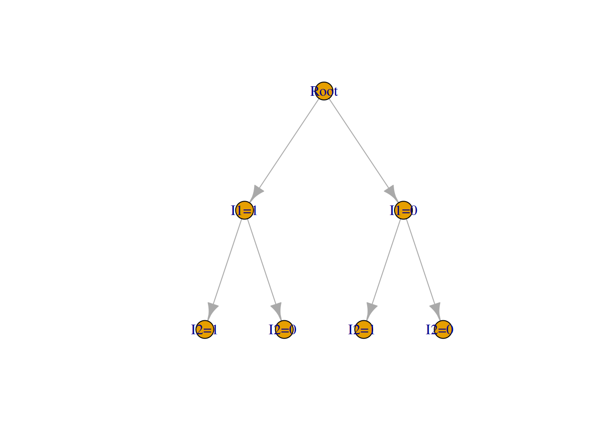
练习 5.19 如果随机向量 \((X, Y)\) 的联合密度函数在区域 \(R\) 内为常数，而在 \(R\) 之外为 0，则称其在二维区域 \(R\) 上服从均匀分布。也就是说，如果：
\[ f(x, y) = \begin{cases} c, & \text{如果 } (x, y) \in R \\ 0, & \text{否则} \end{cases} \]
答案 5.19. 因为：
\[ \begin{align} 1 &= \iint_R f(x, y) dx dy \\ &= \iint_R c dx dy \\ &= c \times R \text{ 的面积} \end{align} \]
由此得出：
\[ c = \frac{1}{R \text{ 的面积}} \]
对于任何区域 \(A \subset R\)：
\[ \begin{align} P\{(X, Y) \in A\} &= \iint_{A} f(x, y) dx dy \\ &= \iint_{A} c dx dy \\ &= \frac{A \text{ 的面积}}{R \text{ 的面积}} \end{align} \]
现在假设 \((X, Y)\) 在如下矩形区域 \(R\) 上均匀分布：
其联合密度函数为：
\[ f(x, y) = \begin{cases} c, & \text{如果 } 0 \leq x \leq a, 0 \leq y \leq b \\ 0, & \text{否则} \end{cases} \]
其中 \(c = \frac{1}{\text{矩形面积}} = \frac{1}{ab}\)。在这种情况下，\(X\) 和 \(Y\) 是独立的均匀随机变量。为了证明这一点，注意对于 \(0 \leq x \leq a, 0 \leq y \leq b\)：
\[ P\{X \leq x, Y \leq y\} = c \int_0^x \int_0^y dy dx = \frac{xy}{ab} \tag{5.22}\]
在上述公式中先令 \(y = b\)，然后令 \(x = a\)，可得：
\[ P\{X \leq x\} = \frac{x}{a}, \quad P\{Y \leq y\} = \frac{y}{b} \tag{5.23}\]
因此，从 方程式 5.22 和 方程式 5.23 我们可以得出结论，\(X\) 和 \(Y\) 是独立的，其中 \(X\) 在 \((0, a)\) 上服从均匀分布，\(Y\) 在 \((0, b)\) 上服从均匀分布。 \(\blacksquare\)
如果一个随机变量 \(X\) 的密度函数由下式给出，则称其服从参数为 \(\mu\) 和 \(\sigma^2\) 的正态分布（normally distributed），记作 \(X \sim \mathcal{N}(\mu, \sigma^2)\)：
\[ f(x) = \frac{1}{\sqrt{2\pi}\sigma} e^{-(x-\mu)^2/2\sigma^2}, \quad -\infty < x < \infty \]
正态密度 \(f(x)\) 是一条关于 \(\mu\) 对称的钟形曲线，它在 \(x = \mu\) 处达到最大值 \(\frac{1}{\sqrt{2\pi}\sigma} \approx 0.399/\sigma\)（见 图 5.7）。
x <- seq(-3.5, 3.5, 0.01)
y <- dnorm(x, 0, 1)
plot(x, y, type = "l", xlab = "x", ylab = "f(x)", main = "(A)")
abline(v = 0, lty = 2)
mu <- 5
sigma <- 2
x2 <- seq(mu - 3.5*sigma, mu + 3.5*sigma, 0.01)
y2 <- dnorm(x2, mu, sigma)
plot(x2, y2, type = "l", xlab = "x", ylab = "f(x)", main = "(B)")
abline(v = mu, lty = 2)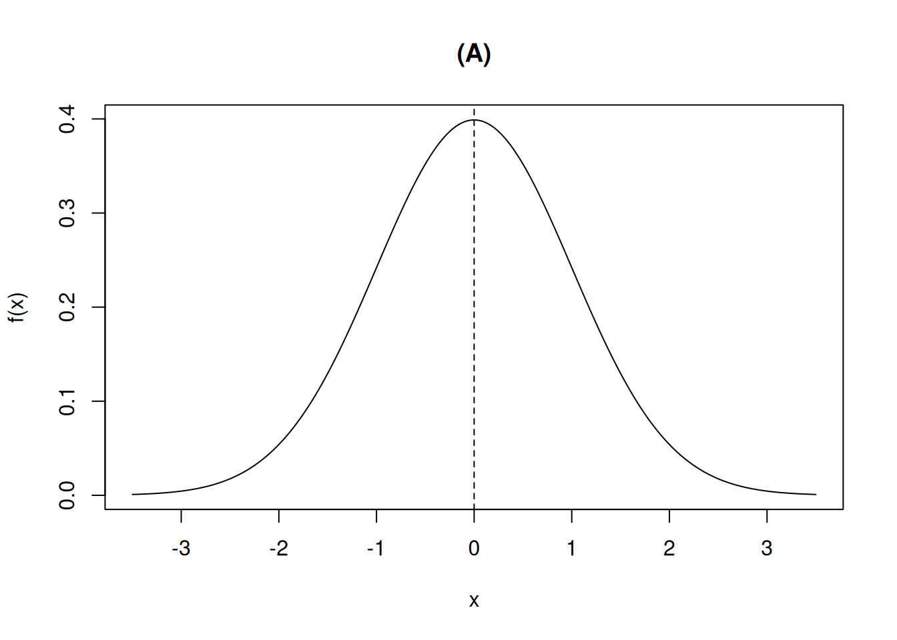
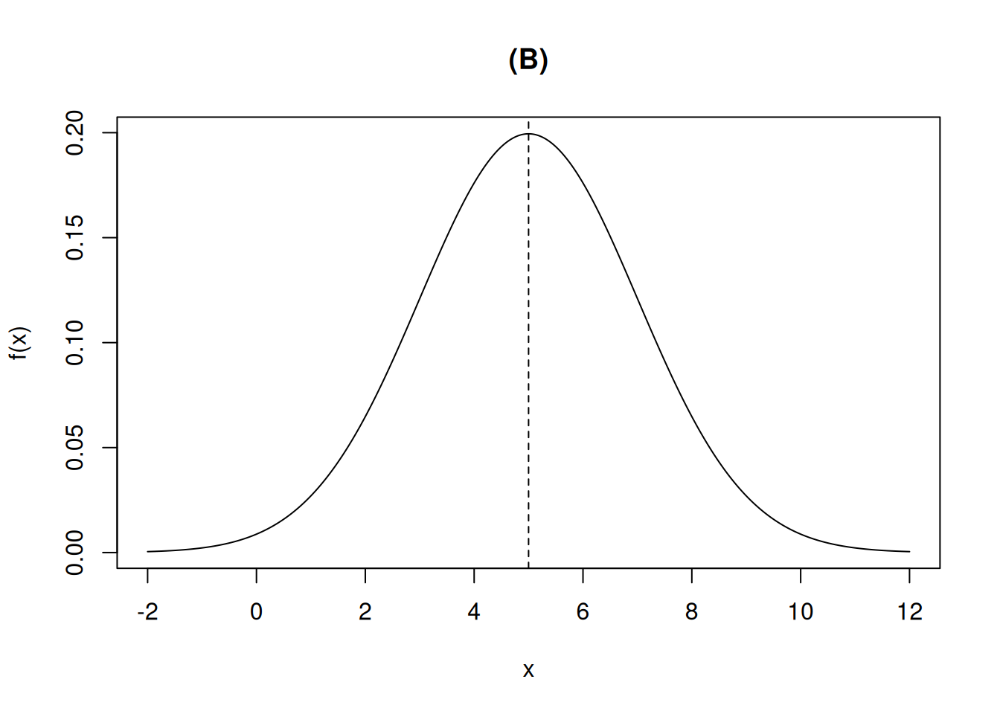
正态分布由法国数学家 Abraham de Moivre 于 1733 年引入，并由他用来近似计算与 \(n\) 较大的二项随机变量相关的概率。这一结果后来由 Laplace 等人推广，现在被包含在被称为中心极限定理（central limit theorem）的概率定理中，该定理为在实践中经常注意到的经验观察提供了一个理论基础，即许多随机现象至少近似地遵循正态概率分布。这种行为的一些例子包括人的身高、气体中分子在任何方向上的速度以及物理量测量中产生的误差。
计算 \(E[X]\) 时注意：
\[ E[X - \mu] = \frac{1}{\sqrt{2\pi}\sigma} \int_{-\infty}^{\infty} (x - \mu) e^{-(x-\mu)^2/2\sigma^2} dx \]
令 \(y = (x - \mu)/\sigma\) 得：
\[ E[X - \mu] = \frac{\sigma}{\sqrt{2\pi}} \int_{-\infty}^{\infty} y e^{-y^2/2} dy \]
但是：
\[ \int_{-\infty}^{\infty} y e^{-y^2/2} dy = -e^{-y^2/2} \Big|_{-\infty}^{\infty} = 0 \]
这表明 \(E[X - \mu] = 0\)，或者等价地：
\[ E[X] = \mu \]
利用这一点，我们现在计算 \(Var(X)\) 如下：
\[ \begin{align} Var(X) &= E[(X - \mu)^2] \\ &= \frac{1}{\sqrt{2\pi}\sigma} \int_{-\infty}^{\infty} (x - \mu)^2 e^{-(x-\mu)^2/2\sigma^2} dx \\ &= \frac{1}{\sqrt{2\pi}} \int_{-\infty}^{\infty} \sigma^2 y^2 e^{-y^2/2} dy \end{align} \tag{5.24}\]
利用分部积分法 \(\int u dv = uv - \int v du\)，取 \(u = y\) 且 \(dv = y e^{-y^2/2} dy\)，得出对于上式中的积分：
\[ \begin{align} \int_{-\infty}^{\infty} y^2 e^{-y^2/2} dy &= -y e^{-y^2/2} \Big|_{-\infty}^{\infty} + \int_{-\infty}^{\infty} e^{-y^2/2} dy \\ &= \int_{-\infty}^{\infty} e^{-y^2/2} dy \end{align} \]
因此，由 方程式 5.24 得：
\[ Var(X) = \sigma^2 \frac{1}{\sqrt{2\pi}} \int_{-\infty}^{\infty} e^{-y^2/2} dy = \sigma^2 \]
其中前述内容利用了 \(\frac{1}{\sqrt{2\pi}} e^{-y^2/2} dy\) 是参数为 \(\mu = 0\) 和 \(\sigma = 1\) 的正态随机变量的密度函数，因此其积分必须等于 1。因此，\(\mu\) 和 \(\sigma^2\) 分别代表正态分布的均值 and 方差。
正态随机变量的一个非常重要的性质是，如果 \(X\) 是均值为 \(\mu\)、方差为 \(\sigma^2\) 的正态分布，那么对于任何常数 \(a\) 和 \(b\) (\(b \neq 0\))，随机变量 \(Y = a + bX\) 也是一个正态随机变量，其参数为：
\[ E[Y] = E[a + bX] = a + bE[X] = a + b\mu \]
且方差为：
\[ Var(Y) = Var(a + bX) = b^2 Var(X) = b^2 \sigma^2 \]
为了验证这一点，令 \(F_Y(y)\) 为 \(Y\) 的分布函数。那么，对于 \(b > 0\)：
\[ \begin{align} F_Y(y) &= P(Y \leq y) \\ &= P(a + bX \leq y) \\ &= P\left(X \leq \frac{y - a}{b}\right) \\ &= F_X\left(\frac{y - a}{b}\right) \end{align} \]
其中 \(F_X\) 是 \(X\) 的分布函数。同样地，如果 \(b < 0\)，那么：
\[ \begin{align} F_Y(y) &= P(a + bX \leq y) \\ &= P\left(X \geq \frac{y - a}{b}\right) \\ &= 1 - F_X\left(\frac{y - a}{b}\right) \end{align} \]
求导得出 \(Y\) 的密度函数为：
\[ f_Y(y) = \begin{cases} \frac{1}{b} f_X\left(\frac{y-a}{b}\right), & \text{如果 } b > 0 \\ -\frac{1}{b} f_X\left(\frac{y-a}{b}\right), & \text{如果 } b < 0 \end{cases} \]
它可以写成：
\[ \begin{align} f_Y(y) &= \frac{1}{|b|} f_X\left(\frac{y - a}{b}\right) \\ &= \frac{1}{\sqrt{2\pi}\sigma |b|} e^{-\left(\frac{y-a}{b} - \mu\right)^2/2\sigma^2} \\ &= \frac{1}{\sqrt{2\pi}\sigma |b|} e^{-(y-a-b\mu)^2/2b^2\sigma^2} \end{align} \]
这表明 \(Y = a + bX\) 是均值为 \(a + b\mu\)、方差为 \(b^2\sigma^2\) 的正态分布。
由此得出，如果 \(X \sim \mathcal{N}(\mu, \sigma^2)\)，那么：
\[ Z = \frac{X - \mu}{\sigma} \]
是一个均值为 0、方差为 1 的正态随机变量。这样一个随机变量 \(Z\) 被称为具有标准 (standard) 或单位 (unit) 正态分布。令 \(\Phi(\cdot)\) 表示其分布函数。也就是说：
\[ \Phi(x) = \frac{1}{\sqrt{2\pi}} \int_{-\infty}^x e^{-y^2/2} dy, \quad -\infty < x < \infty \]
当 \(X\) 是均值为 \(\mu\)、方差为 \(\sigma^2\) 的正态分布时，\(Z = (X - \mu)/\sigma\) 服从标准正态分布这一结果非常重要，因为它使我们能够用关于 \(Z\) 的概率来表达所有关于 \(X\) 的概率语句。例如，为了求 \(P\{X < b\}\)，我们注意到当且仅当 \((X - \mu)/\sigma\) 小于 \((b - \mu)/\sigma\) 时，\(X\) 才会小于 \(b\)，因此：
\[ \begin{align} P\{X < b\} &= P\left(\frac{X - \mu}{\sigma} < \frac{b - \mu}{\sigma}\right) \\ &= \Phi\left(\frac{b - \mu}{\sigma}\right) \end{align} \]
同样地，对于任何 \(a < b\)：
\[ \begin{align} P\{a < X < b\} &= P\left(\frac{a - \mu}{\sigma} < \frac{X - \mu}{\sigma} < \frac{b - \mu}{\sigma}\right) \\ &= P\left(\frac{a - \mu}{\sigma} < Z < \frac{b - \mu}{\sigma}\right) \\ &= P\left(Z < \frac{b - \mu}{\sigma}\right) - P\left(Z < \frac{a - \mu}{\sigma}\right) \\ &= \Phi\left(\frac{b - \mu}{\sigma}\right) - \Phi\left(\frac{a - \mu}{\sigma}\right) \end{align} \]
现在只需要计算 \(\Phi(x)\)。这已经通过近似法完成，结果显示在附录的表 A.1 中，该表列出了很大范围内的非负 \(x\) 值的 \(\Phi(x)\)（达到 4 位小数的精度）。
虽然表 A.1 仅列出了非负 \(x\) 值的 \(\Phi(x)\)，但我们也可以利用标准正态概率密度函数的对称性（关于 0 对称）从表中获得 \(\Phi(-x)\)。也就是说，对于 \(x > 0\)，如果 \(Z\) 代表一个标准正态随机变量，那么（见 图 5.8）：
\[ \begin{align} \Phi(-x) &= P\{Z < -x\} \\ &= P\{Z > x\} \quad (\text{由对称性得}) \\ &= 1 - \Phi(x) \end{align} \]
x <- seq(-3.5, 3.5, 0.01)
y <- dnorm(x)
plot(x, y, type = "l", xlab = "z", ylab = "f(z)", main = "")
# Shading for Z < -x and Z > x
z_val <- 1.5
polygon(c(x[x <= -z_val], -z_val), c(y[x <= -z_val], 0), col = "skyblue")
polygon(c(z_val, x[x >= z_val]), c(0, y[x >= z_val]), col = "skyblue")
text(-2.2, 0.05, "Area = \u03a6(-x)")
text(2.2, 0.05, "Area = 1 - \u03a6(x)")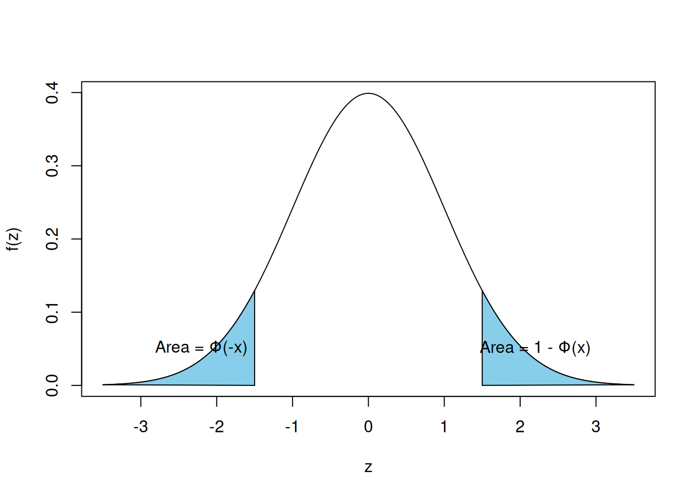
因此，例如：
\[ P\{Z < -1\} = \Phi(-1) = 1 - \Phi(1) = 1 - .8413 = .1587 \]
练习 5.20 如果 \(X\) 是一个均值为 \(\mu = 3\)、方差为 \(\sigma^2 = 16\) 的正态随机变量，求： (a) \(P\{X < 11\}\); (b) \(P\{X > -1\}\); (c) \(P\{2 < X < 7\}\)。
答案 5.20.
练习 5.21 假设必须通过导线将二进制消息——“0”或“1”——从地点 A 传输到地点 B。然而，通过导线发送的数据会受到信道噪声干扰的影响，因此为了减少出错的可能性，当消息为“1”时通过导线发送值 2，而当消息为“0”时发送值 -2。如果 \(x = \pm 2\) 是地点 A 发送的值，那么地点 B 接收到的值 \(R\) 由 \(R = x + N\) 给出，其中 \(N\) 是信道噪声干扰。当在地点 B 接收到消息时，接收者根据以下规则对其进行解码：
若 \(R \geq .5\)，则判定为“1” 若 \(R < .5\)，则判定为“0”
由于信道噪声通常服从正态分布，我们将确定当 \(N\) 是标准正态随机变量时的错误概率。
答案 5.21. 可能发生两类错误：一种是消息“1”被错误地判定为“0”，另一种是“0”被错误地判定为“1”。如果消息是“1”且 \(2 + N < .5\)，则会发生第一类错误；而如果消息是“0”且 \(-2 + N \geq .5\)，则会发生第二类错误。 因此：
\[ P\{\text{错误} | \text{消息为 "1"}\} = P\{N < -1.5\} = 1 - \Phi(1.5) = .0668 \]
并且：
\[ P\{\text{错误} | \text{消息为 "0"}\} = P\{N > 2.5\} = 1 - \Phi(2.5) = .0062 \] \(\blacksquare\)
虽然我们可以使用标准正态概率表来计算所有与正态随机变量相关的概率，但我们也可以使用 R 使这项任务更加简单。如果 \(Z\) 是标准正态随机变量，那么：
pnorm(x) 返回 \(P(Z \leq x)\)。
更一般地，如果 \(X\) 是均值为 \(\mu\)、方差为 \(\sigma^2\) 的正态分布，那么：
pnorm(x, mu, sigma) 返回 \(P(X \leq x)\)。
当然，我们也可以通过以下方式获得 \(P(X \leq x)\)：
例如，如果 \(X\) 是均值为 10、方差为 8 的正态分布，那么 \(P(X \leq 12)\) 可以通过以下任何一种方式获得：
或者：
或者：
练习 5.22 电阻器中消耗的功率 \(W\) 与电压 \(V\) 的平方成正比。即：
\[ W = r V^2 \]
其中 \(r\) 是一个常数。如果 \(r = 3\)，且 \(V\) 可以被假定为（在非常好的近似下）均值为 6、标准差为 1 的正态随机变量，求： (a) \(E[W]\); (b) \(P\{W > 120\}\)。
答案 5.22.
> 1 - pnorm(sqrt(40), 6, 1)
[1] 0.3727588
``` $\blacksquare$
:::
现在让我们计算正态随机变量的矩母函数。首先，我们计算标准正态随机变量 $Z$ 的矩母函数。
$$
\begin{align}
E[e^{tZ}] &= \int_{-\infty}^{\infty} e^{tx} \frac{1}{\sqrt{2\pi}} e^{-x^2/2} dx \\
...
&= e^{\mu t + \sigma^2 t^2 / 2}
\end{align}
$$
其中：
$$
\mu = \sum_{i=1}^n \mu_i, \quad \sigma^2 = \sum_{i=1}^n \sigma_i^2
$$
因此，$\sum_{i=1}^n X_i$ 具有与均值为 $\mu$、方差为 $\sigma^2$ 的正态随机变量相同的矩母函数。因此，根据矩母函数与分布之间的一一对应关系，我们可以得出结论：$\sum_{i=1}^n X_i$ 是均值为 $\sum_{i=1}^n \mu_i$、方差为 $\sum_{i=1}^n \sigma_i^2$ 的正态分布。
::: {#exr-5_5_4}
来自美国国家海洋和大气管理局的数据表明，洛杉矶的年降水量是一个均值为 12.08 英寸、标准差为 3.1 英寸的正态随机变量。
(a) 求未来 2 年的总降水量超过 25 英寸的概率。
(b) 求明年的降水量比后年多出 3 英寸以上的概率。
假设未来 2 年的降水量总额是相互独立的。
:::
::: {#sol-5_5_4}
令 $X_1$ 和 $X_2$ 为未来 2 年的降水量总额。
(a) 因为 $X_1 + X_2$ 是均值为 24.16、方差为 $2(3.1)^2 = 19.22$ 的正态分布，我们使用 R 获得 $P(X_1 + X_2 > 25)$：
```R
> 1 - pnorm(25, 24.16, sqrt(19.22))
[1] 0.4240265因此，洛杉矶未来 2 年的总降水量超过 25 英寸的可能性为 42.4%，而明年降水量比后年多出 3 英寸以上的可能性为 24.69%。 \(\blacksquare\)
对于 \(\alpha \in (0, 1)\)，令 \(z_\alpha\) 满足：
\[ P\{Z > z_\alpha\} = 1 - \Phi(z_\alpha) = \alpha \] …
如果一个连续随机变量的概率密度函数由下式给出（对于某个 \(\lambda > 0\)）：
\[ f(x) = \begin{cases} \lambda e^{-\lambda x}, & \text{如果 } x \geq 0 \\ 0, & \text{如果 } x < 0 \end{cases} \]
则称其为参数为 \(\lambda\) 的指数随机变量（exponential random variable）（或者简称为指数分布）。指数随机变量的累积分布函数 \(F(x)\) 为：
\[ \begin{align} F(x) &= P\{X \leq x\} \\ &= \int_0^x \lambda e^{-\lambda y} dy \\ &= 1 - e^{-\lambda x}, \quad x \geq 0 \end{align} \]
指数分布在实际中经常作为某个特定事件发生之前的等待时间。例如，（从现在开始）直到下一次地震发生的时刻，或者直到下一场战争爆发的时刻，或者你接到的下一个电话是拨错号码的时刻，这些随机变量在实际中往往服从指数分布（参见 章节 5.6.1 的解释）。
指数分布的矩母函数由下式给出：
\[ \begin{align} \phi(t) &= E[e^{tX}] \\ &= \int_0^\infty e^{tx} \lambda e^{-\lambda x} dx \\ &= \lambda \int_0^\infty e^{-(\lambda - t)x} dx \\ &= \frac{\lambda}{\lambda - t}, \quad t < \lambda \end{align} \]
求导得：
\[ \phi'(t) = \frac{\lambda}{(\lambda - t)^2} \] \[ \phi''(t) = \frac{2\lambda}{(\lambda - t)^3} \]
因此：
\[ E[X] = \phi'(0) = 1/\lambda \] \[ Var(X) = \phi''(0) - (E[X])^2 = 2/\lambda^2 - 1/\lambda^2 = 1/\lambda^2 \]
因此 \(\lambda\) 是均值的倒数，且方差等于均值的平方。
指数随机变量的关键性质是它是无记忆的（memoryless），即对于一个非负随机变量 \(X\)，如果满足以下条件，则称其是无记忆的：
\[ P\{X > s + t | X > t\} = P\{X > s\} \quad \text{对于所有 } s, t \geq 0 \tag{5.25}\]
为了理解为什么 方程式 5.25 被称为无记忆性，请设想 \(X\) 代表某个物品在失效前的运行时间。现在让我们考虑这样一个概率：一个已经运行了 \(t\) 小时的物品，将至少继续运行额外的 \(s\) 小时。既然如果该物品的总运行寿命超过 \(t+s\)（已知该物品在 \(t\)时刻仍在运行），情况就是如此，那么我们看到：
\[ P\{\text{运行了 } t \text{ 个单位时间的物品其额外寿命超过 } s\} = P\{X > t + s | X > t\} \]
因此，我们看到 方程式 5.25 表明：一个运行了 \(t\) 时间的物品，其额外寿命的分布与一个新物品的寿命分布相同——换句话说，当 方程式 5.25 满足时，无需记住一个仍在运行的物品的年龄，因为只要它还在运行，它就“和新的一样”。
方程式 5.25 中的条件等价于：
\[ \frac{P\{X > s + t, X > t\}}{P\{X > t\}} = P\{X > s\} \]
或：
\[ P\{X > s + t\} = P\{X > s\} P\{X > t\} \tag{5.26}\]
当 \(X\) 是一个指数随机变量时：
\[ P\{X > x\} = e^{-\lambda x}, \quad x > 0 \]
因此 方程式 5.26 成立（因为 \(e^{-\lambda(s+t)} = e^{-\lambda s} e^{-\lambda t}\)）。因此，指数分布的随机变量是无记忆的（事实上，可以证明它们是唯一的无记忆随机变量）。
练习 5.23 假设一辆汽车在电池耗尽前可以行驶的里程数服从指数分布，平均值为 10,000 英里。如果一个人想进行一次 5000 英里的旅行，她在不更换汽车电池的情况下完成旅行的概率是多少？如果分布不是指数分布，能得出什么结论？
答案 5.23. 根据指数分布的无记忆性，电池剩余寿命（单位：千英里）服从参数为 \(\lambda = 1/10\) 的指数分布。因此所需的概率为：
\[ \begin{align} P\{\text{剩余寿命} > 5\} &= 1 - F(5) \\ &= e^{-5\lambda} \\ &= e^{-1/2} \approx .604 \end{align} \]
然而，如果寿命分布 \(F\) 不是指数分布，那么相关的概率是：
\[ P\{\text{寿命} > t + 5 | \text{寿命} > t\} = \frac{1 - F(t + 5)}{1 - F(t)} \]
其中 \(t\) 是电池在旅行开始前已经行驶的里程数。因此，如果分布不是指数分布，在计算所需概率之前需要额外的信息（即 \(t\)）。 \(\blacksquare\)
为了进一步说明无记忆性，请考虑下面的例子。
练习 5.24 一组工拥有 3 台可互换的机器，其中 2 台必须处于工作状态才能使这组工完成工作。在使用时，每台机器在发生故障前的运行时间都服从参数为 \(\lambda\) 的指数分布。工人们最初决定使用机器 A 和 B，并将机器 C 作为备用，以替换 A 或 B 中首先发生故障的那台。然后，他们将继续工作，直到剩下两台机器中的一台发生故障。当工人们因只有一台机器未发生故障而被迫停止工作时，那台仍在运行的机器是机器 C 的概率是多少？
答案 5.24. 通过调用指数分布的无记忆性，无需任何计算就可以很容易地回答这个问题。论点如下：考虑机器 C 第一次投入使用的时刻。在那一时刻，A 或 B 刚刚发生故障，而另一台——称之为机器 0——仍在运行。现在，尽管机器 0 已经运行了一段时间，但根据指数分布的无记忆性，它的剩余寿命分布与刚刚投入使用的机器寿命分布相同。因此，机器 0 和机器 C 的剩余寿命具有相同的分布，所以根据对称性，机器 0 在机器 C 之前发生故障的概率是 \(1/2\)。 \(\blacksquare\)
下面的命题给出了指数分布的另一个性质。
定理 5.1 如果 \(X_1, X_2, \dots, X_n\) 是参数分别为 \(\lambda_1, \lambda_2, \dots, \lambda_n\) 的独立指数随机变量，那么 \(\min(X_1, X_2, \dots, X_n)\) 是参数为 \(\sum_{i=1}^n \lambda_i\) 的指数随机变量。
证明： 由于一组数中的最小值大于 \(x\) 当且仅当所有数值都大于 \(x\)，因此我们有：
\[ \begin{align} P\{\min(X_1, X_2, \dots, X_n) > x\} &= P\{X_1 > x, X_2 > x, \dots, X_n > x\} \\ &= \prod_{i=1}^n P\{X_i > x\} \quad (\text{由于独立性}) \\ &= \prod_{i=1}^n e^{-\lambda_i x} \\ &= e^{-\sum_{i=1}^n \lambda_i x} \end{align} \] \(\blacksquare\)
练习 5.25 串联系统（series system）是指所有组件都必须正常运行才能使系统本身正常运行的系统。对于一个由 \(n\) 个组件组成的串联系统，如果其组件的寿命是参数为 \(\lambda_1, \lambda_2, \dots, \lambda_n\) 的独立指数随机变量，那么系统在时刻 \(t\)后仍存活的概率是多少？
答案 5.25. 由于系统的寿命等于最短的组件寿命，由 定理 5.1 得出：
\[ P\{\text{系统寿命超过 } t\} = e^{-\sum_i \lambda_i t} \] \(\blacksquare\)
指数随机变量的另一个有用性质是：当 \(X\) 是参数为 \(\lambda\) 的指数分布且 \(c > 0\) 时，\(cX\) 是参数为 \(\lambda/c\) 的指数分布。这是因为：
\[ \begin{align} P\{cX \leq x\} &= P\{X \leq x/c\} \\ &= 1 - e^{-\lambda x/c} \end{align} \]
参数 \(\lambda\) 被称为指数分布的率（rate）。
假设“事件”发生在随机的时间点上，令 \(N(t)\) 表示在时间区间 \([0, t]\) 内发生的事件数量。如果满足以下条件，则称这些事件构成了一个率（rate）为 \(\lambda\) (\(\lambda > 0\)) 的泊松过程（Poisson process）：
因此，条件 (a) 说明该过程从时间 0 开始。条件 (b)，即独立增量假设（independent increment assumption），说明例如截止时刻 \(t\) 的事件数量［即 \(N(t)\)］与发生在时刻 \(t\) 到 \(t+s\) 之间的事件数量［即 \(N(t+s) - N(t)\)］是相互独立的。条件 (c)，即平稳增量假设（stationary increment assumption），说明 \(N(t+s) - N(t)\) 的概率分布对于所有 \(t\) 值都是相同的。条件 (d) 和 (e) 说明在一个长度为 \(h\) 的极小区间内，发生一个事件的概率近似为 \(\lambda h\)，而发生 2 个或更多事件的概率近似为 0。
我们现在将证明这些假设意味着：在任何长度为 \(t\) 的区间内发生的事件数量是一个参数为 \(\lambda t\) 的泊松随机变量。准确地说，让我们考查区间 \([0, t]\) 并用 \(N(t)\) 表示该区间内发生的事件数量。为了得到 \(P\{N(t) = k\}\) 的表达式，我们首先将区间 \([0, t]\) 分成 \(n\) 个不重叠的子区间，每个子区间的长度为 \(t/n\)（见 图 5.9）。
t <- 10
n <- 8
plot(0, 0, type = "n", xlim = c(0, t), ylim = c(-1, 1), xlab = "time", ylab = "", yaxt = "n", bty = "n")
segments(0, 0, t, 0, lwd = 2)
for (i in 0:n) {
segments(i * t/n, -0.1, i * t/n, 0.1)
text(i * t/n, -0.3, paste(i, "t/n", sep=""), cex = 0.8)
}
text(t/2, 0.5, "Interval [0, t] divided into n parts")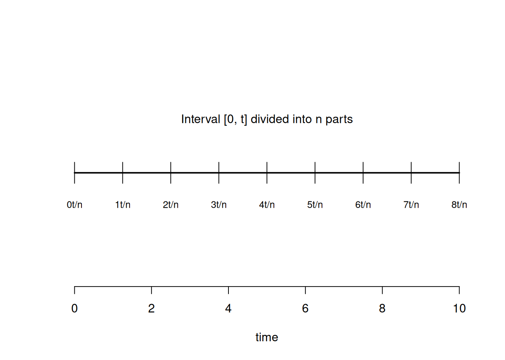
那么，如果在以下任何一种情况下，\([0, t]\) 内将会有 \(k\) 个事件发生：
由于这两个可能性显然是互斥的，且由于条件 (i) 等价于 \(n\) 个子区间中有 \(k\) 个恰好包含 1 个事件，而其他 \(n - k\) 个包含 0 个事件，我们有：
\[ \begin{align} P\{N(t) = k\} &= P\{n \text{ 个子区间中有 } k \text{ 个恰好包含 } 1 \text{ 个事件且其他 } n-k \text{ 个包含 } 0 \text{ 个事件}\} \\ &\quad + P\{N(t) = k \text{ 且至少有 } 1 \text{ 个子区间包含 } 2 \text{ 个或更多事件}\} \end{align} \tag{5.27}\]
现在可以利用条件 (e) 证明：
\[ P\{N(t) = k \text{ 且至少有 } 1 \text{ 个子区间包含 } 2 \text{ 个或更多事件}\} \to 0, \quad \text{随着 } n \to \infty \tag{5.28}\]
此外，从条件 (d) 和 (e) 可以得出：
\[ P\{\text{子区间内恰好有 } 1 \text{ 个事件}\} \approx \frac{\lambda t}{n} \] \[ P\{\text{子区间内有 } 0 \text{ 个事件}\} \approx 1 - \frac{\lambda t}{n} \]
因此，由于不同子区间内发生的事件数量是独立的［来自条件 (b)］，由此得出：
\[ \begin{align} & P\{n \text{ 个子区间中有 } k \text{ 个恰好包含 } 1 \text{ 个事件且其他 } n-k \text{ 个包含 } 0 \text{ 个事件}\} \\ &\approx \binom{n}{k} \left(\frac{\lambda t}{n}\right)^k \left(1 - \frac{\lambda t}{n}\right)^{n-k} \end{align} \tag{5.29}\]
当子区间数量 \(n \to \infty\) 时，该近似变得精确。然而，方程式 5.29 中的概率正好是参数为 \(n\) 且 \(p = \lambda t/n\) 的二项随机变量等于 \(k\) 的概率。因此，随着 \(n\) 越来越大，它趋近于均值为 \(n\lambda t/n = \lambda t\) 的泊松随机变量等于 \(k\) 的概率。因此，从 方程式 5.27、方程式 5.28 和 方程式 5.29 中，我们在令 \(n\) 趋近于 \(\infty\) 时看到：
\[ P\{N(t) = k\} = e^{-\lambda t} \frac{(\lambda t)^k}{k!} \]
我们已经证明了：
定理 5.2 对于一个率为 \(\lambda\) 的泊松过程：
\[ P\{N(t) = k\} = e^{-\lambda t} \frac{(\lambda t)^k}{k!}, \quad k = 0, 1, \dots \]
也就是说，在任何长度为 \(t\) 的区间内的事件数量都服从均值为 \(\lambda t\) 的泊松分布。
对于一个泊松过程，令 \(X_1\) 表示第一个事件发生的时刻。进一步地，对于 \(n > 1\)，令 \(X_n\) 表示第 \(n - 1\) 个事件与第 \(n\) 个事件之间流逝的时间。序列 \(\{X_n, n = 1, 2, \dots\}\) 被称为到达间隔时间序列（sequence of interarrival times）。例如，如果 \(X_1 = 5\) 且 \(X_2 = 10\)，那么泊松过程的第一个事件将发生在时刻 5，第二个事件发生在时刻 15。
我们现在确定 \(X_n\) 的分布。为此，我们首先注意到事件 \(\{X_1 > t\}\) 发生当且仅当在区间 \([0, t]\) 内没有泊松过程的事件发生，因此：
\[ P\{X_1 > t\} = P\{N(t) = 0\} = e^{-\lambda t} \]
因此，\(X_1\) 服从均值为 \(1/\lambda\) 的指数分布。为了获得 \(X_2\) 的分布，注意：
\[ \begin{align} P\{X_2 > t | X_1 = s\} &= P\{0 \text{ 个事件在 } (s, s+t] | X_1 = s\} \\ &= P\{0 \text{ 个事件在 } (s, s+t]\} \\ &= e^{-\lambda t} \end{align} \]
其中最后两个等号源自独立且平稳的增量。因此，从前述内容我们看到，\(X_2\) 也是一个均值为 \(1/\lambda\) 的指数随机变量，并且，\(X_2\) 与 \(X_1\) 是独立的。重复同样的论证可得：
定理 5.3 \(X_1, X_2, \dots\) 是独立的指数随机变量，均值均为 \(1/\lambda\)。
如果 \(X\) 是一个率为 \(\lambda\) 的指数随机变量，那么：
\[ Y = \alpha e^X \]
被称作参数为 \(\alpha\) 和 \(\lambda\) 的帕累托随机变量（Pareto random variable）。参数 \(\lambda > 0\) 被称为指数参数（index parameter），而 \(\alpha\) 被称为最小参数（minimum parameter）（因为 \(P(Y \geq \alpha) = 1\)）。\(Y\) 的分布函数推导如下： 对于 \(y \geq \alpha\)：
\[ \begin{align} P\{Y > y\} &= P\{\alpha e^X > y\} \\ &= P\{e^X > y/\alpha\} \\ &= P\{X > \log(y/\alpha)\} \\ &= e^{-\lambda \log(y/\alpha)} \\ &= e^{-\log((y/\alpha)^\lambda)} \\ &= (\alpha/y)^\lambda \end{align} \]
因此，\(Y\) 的分布函数为：
\[ F_Y(y) = 1 - P(Y > y) = 1 - (\alpha/y)^\lambda, \quad y \geq \alpha \tag{5.30}\]
对分布函数求导得到 \(Y\) 的密度函数：
\[ f_Y(y) = \lambda \alpha^\lambda y^{-(\lambda+1)}, \quad y \geq \alpha \tag{5.31}\]
可以证明（见习题 5.49），当 \(\lambda \leq 1\) 时，\(E[Y] = \infty\)。当 \(\lambda > 1\) 时，均值的计算如下：
\[ \begin{align} E[Y] &= \int_\alpha^\infty y \lambda \alpha^\lambda y^{-(\lambda+1)} dy \\ &= \lambda \alpha^\lambda \int_\alpha^\infty y^{-\lambda} dy \\ &= \alpha^\lambda \frac{\lambda}{1 - \lambda} y^{1-\lambda} \bigg|_\alpha^\infty \\ &= \alpha^\lambda \frac{\lambda}{\lambda - 1} \alpha^{1-\lambda} \\ &= \frac{\alpha \lambda}{\lambda - 1} \end{align} \tag{5.32}\]
帕累托分布的一个重要特征是：对于 \(y_0 > \alpha\)，已知帕累托随机变量 \(Y\)（参数为 \(\alpha\) 和 \(\lambda\)）超过 \(y_0\) 的条件下，其条件分布是参数为 \(y_0\) 和 \(\lambda\) 的帕累托分布。为了验证这一点，对于 \(y > y_0\)，有：
\[ P\{Y > y | Y > y_0\} = \frac{P\{Y > y, Y > y_0\}}{P\{Y > y_0\}} = \frac{P\{Y > y\}}{P\{Y > y_0\}} = \frac{\alpha^\lambda y^{-\lambda}}{\alpha^\lambda y_0^{-\lambda}} = (y_0/y)^\lambda \]
因此，该条件分布确实是参数为 \(y_0\) 和 \(\lambda\) 的帕累托分布。
帕累托分布最早的应用之一是作为人口成员年收入的分布。事实上，人们广泛假设许多人口的收入可以用指数参数为 \(\lambda = \log(5)/\log(4) \approx 1.161\) 的帕累托分布来建模。在这种假设下，事实证明，前 20% 挣钱最多的人的总收入占人口总收入的 80%；并且在这部分高收入者中，前 20% 的人挣到了所有高收入者总收入的 80%，以此类推。
为了验证上述说法，令 \(y_{.8}\) 为帕累托分布的 80 分位数。因为 \(F_Y(y) = 1 - (\alpha/y)^\lambda\)，我们有 \(.8 = F(y_{.8}) = 1 - (\alpha/y_{.8})^\lambda\)，即：
\[ (\alpha/y_{.8})^\lambda = .2 \quad \text{或} \quad (y_{.8}/\alpha)^\lambda = 5 \]
因此：
\[ y_{.8} = \alpha 5^{1/\lambda} \]
现在假设 \(\lambda = \log(5)/\log(4)\)，注意到 \(\log(4) = (1/\lambda)\log(5) = \log(5^{1/\lambda})\)，说明 \(4 = 5^{1/\lambda}\)，或者等价地 \(1/\lambda = \log_5(4)\)。因此：
\[ y_{.8} = \alpha 5^{\log_5(4)} = 4\alpha \]
前 20% 高收入人群的平均收入为 \(E[Y|Y > y_{.8}]\)，利用已知超过 \(y_{.8}\) 的条件下 \(Y\) 的条件分布是参数为 \(y_{.8}\) 和 \(\lambda\) 的帕累托分布，可以很容易得到。利用前面推导的 \(E[Y]\) 公式，可得：
\[ E[Y|Y > y_{.8}] = y_{.8} \frac{\lambda}{\lambda - 1} = 4\alpha \frac{\lambda}{\lambda - 1} \]
为了得到后 80% 低收入人群的平均收入 \(E[Y|Y < y_{.8}]\)，我们利用恒等式：
\[ E[Y] = E[Y|Y < y_{.8}](.8) + E[Y|Y > y_{.8}](.2) \]
代入前面得到的 \(E[Y]\) 和 \(E[Y|Y > y_{.8}]\) 表达式，上式变为：
\[ \alpha \frac{\lambda}{\lambda - 1} = \frac{4}{5} E[Y|Y < y_{.8}] + \frac{4}{5} \alpha \frac{\lambda}{\lambda - 1} \]
解得：
\[ E[Y|Y < y_{.8}] = \frac{\alpha}{4} \frac{\lambda}{\lambda - 1} \]
因此：
\[ E[Y|Y < y_{.8}] = \frac{1}{16} E[Y|Y > y_{.8}] \]
也就是说，前 20% 高收入人群的平均收入是后 80% 低收入人群平均收入的 16 倍。这表明，虽然低收入群体的人数是高收入群体的 4 倍，但低收入群体的总收入仅占人口总收入的 20%。（平均而言，人口中每 5 个人，有 4 个在后 80% 群体中，1 个在前 20% 群体中；低收入群体的 4 个人平均总共收入 \(4 \cdot \frac{\alpha}{4} \frac{\lambda}{\lambda-1} = \alpha \frac{\lambda}{\lambda-1}\)，而高收入群体的那 1 个人平均收入 \(4\alpha \frac{\lambda}{\lambda-1}\)。因此，人口总收入的每 5 美元中，有 4 美元是由前 20% 的高收入者赚取的。）
由于高收入者（即收入超过 \(y_{.8}\) 的人）的条件分布是参数为 \(y_{.8}\) 和 \(\lambda\) 的帕累托分布，因此从上述结论也可以推导出，该群体中前 20% 的人赚取了该群体总收入的 80%，依此类推。
帕累托分布已被应用于各种领域。例如，它被用作以下各项的分布：
如果一个随机变量其密度函数由下式给出，则称其服从参数为 \((\alpha, \lambda)\) 的伽马分布（gamma distribution）（\(\alpha > 0, \lambda > 0\)）：
\[ f(x) = \begin{cases} \frac{lambda e^{-\lambda x}(\lambda x)^{\alpha-1}}{\Gamma(\alpha)}, & \text{如果 } x \geq 0 \\ 0, & \text{如果 } x < 0 \end{cases} \]
其中：
\[ \begin{align} \Gamma(\alpha) &= \int_0^\infty \lambda e^{-\lambda x}(\lambda x)^{\alpha-1} dx \\ &= \int_0^\infty e^{-y} y^{\alpha-1} dy \quad (\text{通过令 } y = \lambda x) \end{align} \]
利用分部积分法 \(\int u dv = uv - \int v du\)，取 \(u = y^{\alpha-1}, dv = e^{-y} dy, v = -e^{-y}\)，可得对于 \(\alpha > 1\)：
\[ \begin{align} \int_0^\infty e^{-y} y^{\alpha-1} dy &= -e^{-y} y^{\alpha-1} \Big|_0^\infty + \int_0^\infty e^{-y} (\alpha - 1) y^{\alpha-2} dy \\ &= (\alpha - 1) \int_0^\infty e^{-y} y^{\alpha-2} dy \end{align} \]
或：
\[ \Gamma(\alpha) = (\alpha - 1) \Gamma(\alpha - 1) \tag{5.33}\]
当 \(\alpha\) 为整数（假设 \(\alpha = n\)）时，我们可以对上式进行迭代得到：
\[ \begin{align} \Gamma(n) &= (n - 1) \Gamma(n - 1) \\ &= (n - 1)(n - 2) \Gamma(n - 2) \\ &= (n - 1)(n - 2)(n - 3) \Gamma(n - 3) \\ &\vdots \\ &= (n - 1)! \Gamma(1) \end{align} \]
由于：
\[ \Gamma(1) = \int_0^\infty e^{-y} dy = 1 \]
我们看到：
\[ \Gamma(n) = (n - 1)! \]
函数 \(\Gamma(\alpha)\) 被称为 伽马函数 (gamma function)。
应当指出，当 \(\alpha = 1\) 时，伽马分布退化为均值为 \(1/\lambda\) 的指数分布。
参数为 \((\alpha, \lambda)\) 的伽马随机变量 \(X\) 的矩母函数获得如下：
\[ \begin{align} \phi(t) &= E[e^{tX}] \\ &= \frac{\lambda^\alpha}{\Gamma(\alpha)} \int_0^\infty e^{tx} e^{-\lambda x} x^{\alpha-1} dx \\ &= \frac{\lambda^\alpha}{\Gamma(\alpha)} \int_0^\infty e^{-(\lambda - t)x} x^{\alpha-1} dx \\ &= \left(\frac{\lambda}{\lambda - t}\right)^\alpha \frac{1}{\Gamma(\alpha)} \int_0^\infty e^{-y} y^{\alpha-1} dy \\ &= \left(\frac{\lambda}{\lambda - t}\right)^\alpha \end{align} \tag{5.34}\]
其中最后一个等号利用了 \(e^{-y} y^{\alpha-1}/\Gamma(\alpha)\) 是一个密度函数，因此其积分为 1。
对 方程式 5.34 求导得：
\[ \phi'(t) = \frac{\alpha \lambda^\alpha}{(\lambda - t)^{\alpha+1}} \] \[ \phi''(t) = \frac{\alpha(\alpha + 1) \lambda^\alpha}{(\lambda - t)^{\alpha+2}} \]
因此：
\[ E[X] = \phi'(0) = \alpha/\lambda \tag{5.35}\] \[ \begin{align} Var(X) &= E[X^2] - (E[X])^2 \\ &= \phi''(0) - (\alpha/\lambda)^2 \\ &= \frac{\alpha(\alpha + 1)}{\lambda^2} - \frac{\alpha^2}{\lambda^2} = \frac{\alpha}{\lambda^2} \end{align} \tag{5.36}\]
伽马分布的一个重要性质是：如果 \(X_1\) 和 \(X_2\) 是参数分别为 \((\alpha_1, \lambda)\) 和 \((\alpha_2, \lambda)\) 的独立伽马随机变量，那么 \(X_1 + X_2\) 是参数为 \((\alpha_1 + \alpha_2, \lambda)\) 的伽马随机变量。该结果很容易得出，因为：
\[ \begin{align} \phi_{X_1+X_2}(t) &= E[e^{t(X_1+X_2)}] \\ &= \phi_{X_1}(t) \phi_{X_2}(t) \\ &= \left(\frac{\lambda}{\lambda - t}\right)^{\alpha_1} \left(\frac{\lambda}{\lambda - t}\right)^{\alpha_2} \\ &= \left(\frac{\lambda}{\lambda - t}\right)^{\alpha_1 + \alpha_2} \end{align} \]
可以看到这是参数为 \((\alpha_1 + \alpha_2, \lambda)\) 的伽马随机变量的矩母函数。由于矩母函数唯一地表征了分布，该结果成立。
上述结果很容易推广到如下命题：
定理 5.4 如果 \(X_i, i = 1, \dots, n\) 是独立伽马随机变量，参数分别为 \((\alpha_i, \lambda)\)，那么 \(\sum_{i=1}^n X_i\) 是参数为 \((\sum_{i=1}^n \alpha_i, \lambda)\) 的伽马分布。
由于参数为 \((1, \lambda)\) 的伽马分布退化为率为 \(\lambda\) 的指数分布，我们因此证明了如下有用的结果：
推论 5.1 如果 \(X_1, \dots, X_n\) 是率均为 \(\lambda\) 的独立指数随机变量，那么 \(\sum_{i=1}^n X_i\) 是参数为 \((n, \lambda)\) 的伽马随机变量。
例子 5.1 电池的寿命服从率为 \(\lambda\) 的指数分布。如果一个立体声收录机需要一节电池才能运行，那么总共 \(n\) 节电池可提供的总播放时间是一个参数为 \((n, \lambda)\) 的伽马随机变量。 \(\blacksquare\)
图 5.10 展示了 \(\alpha\) 取不同值时参数为 \((\alpha, 1)\) 的伽马密度图形。应当指出，随着 \(\alpha\) 变大，密度开始类似于正态密度。这在理论上可以由中心极限定理解释，该定理将在下一章介绍。
x <- seq(0, 15, 0.01)
plot(x, dgamma(x, 0.5, 1), type = "l", col = "blue", ylim = c(0, 0.6), xlab = "x", ylab = "f(x)", main = "(A)")
lines(x, dgamma(x, 2, 1), col = "red")
lines(x, dgamma(x, 3, 1), col = "green")
lines(x, dgamma(x, 4, 1), col = "orange")
lines(x, dgamma(x, 5, 1), col = "purple")
legend("topright", legend = c("0.5", "2", "3", "4", "5"), col = c("blue", "red", "green", "orange", "purple"), lty = 1, title = "alpha")
x2 <- seq(20, 80, 0.1)
plot(x2, dgamma(x2, 50, 1), type = "l", xlab = "x", ylab = "f(x)", main = "(B)")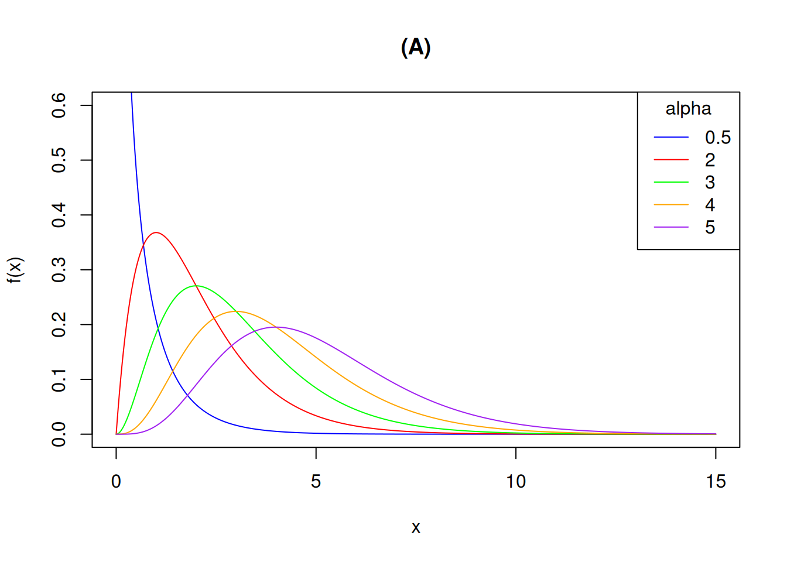
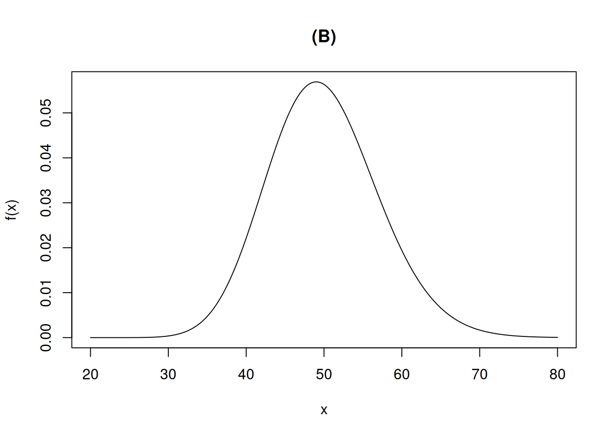
定义 5.1 如果 \(Z_1, Z_2, \dots, Z_n\) 是独立的标准正态随机变量，那么由下式定义的 \(X\)：
\[ X = Z_1^2 + Z_2^2 + \dots + Z_n^2 \tag{5.37}\]
被称为服从自由度为 \(n\) 的卡方分布（chi-square distribution）。我们将使用符号：
\[ X \sim \chi_n^2 \]
来表示 \(X\) 服从自由度为 \(n\) 的卡方分布。
卡方分布具有可加性：如果 \(X_1\) 和 \(X_2\) 是独立的卡方随机变量，其自由度分别为 \(n_1\) 和 \(n_2\)，那么 \(X_1 + X_2\) 是自由度为 \(n_1 + n_2\) 的卡方随机变量。这可以通过矩母函数来证明，或者最简单地通过注意 \(X_1 + X_2\) 是 \(n_1 + n_2\) 个独立标准正态随机变量的平方和，从而具有自由度为 \(n_1 + n_2\) 的卡方分布。
如果 \(X\) 是自由度为 \(n\) 的卡方随机变量，那么对于任何 \(\alpha \in (0, 1)\)，数量 \(\chi_{\alpha, n}^2\) 定义如下：
\[ P\{X \geq \chi_{\alpha, n}^2\} = \alpha \]
这在 图 5.11 中有说明。
x <- seq(0, 25, 0.1)
y <- dchisq(x, 8)
plot(x, y, type = "l", xlab = "x", ylab = "f(x)", main = "")
alpha_val <- qchisq(1 - 0.1, 8)
polygon(c(alpha_val, x[x >= alpha_val]), c(0, y[x >= alpha_val]), col = "skyblue")
text(alpha_val + 2, 0.02, expression(alpha))
text(alpha_val, -0.01, expression(chi[alpha, n]^2))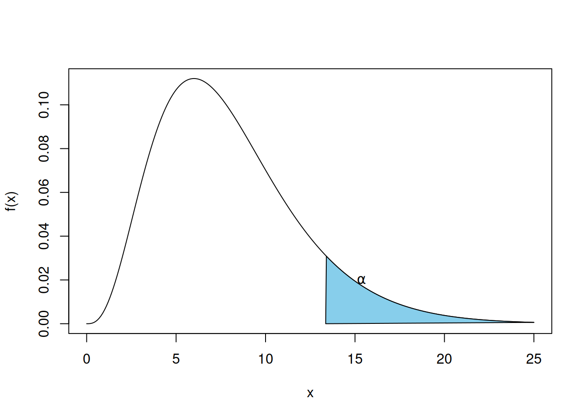
卡方概率以及 \(\chi_{\alpha, n}^2\) 的值可以使用 R 获得。要获得当 \(X\) 是自由度为 \(n\) 的卡方随机变量时的 \(P(X \leq x)\)，只需使用 R 命令 pchisq(x, n)。要获得 \(\chi_{\alpha, n}^2\)，请键入 qchisq(1 - alpha, n)。
练习 5.26 确定 \(P\{\chi_{26}^2 \leq 30\}\)，其中 \(\chi_{26}^2\) 是自由度为 26 的卡方随机变量。
答案 5.26. R 给出解为：
> pchisq(30, 26)
[1] 0.732389
``` $\blacksquare$
:::
::: {#exr-5_8_2}
求 $\chi_{.05, 15}^2$。
:::
::: {#sol-5_8_2}
R 给出结果为：
```R
> qchisq(.95, 15)
[1] 24.99579\(\blacksquare\)
练习 5.27 假设我们正试图定位三维空间中的一个目标，并且所选点的三个坐标误差（以米为单位）是均值为 0、标准差为 2 的独立正态随机变量。求所选点与目标之间的距离超过 3 米的概率。
答案 5.27. 如果 \(D\) 是距离，那么：
\[ D^2 = X_1^2 + X_2^2 + X_3^2 \]
其中 \(X_i\) 是第 \(i\) 个坐标的误差。由于 \(Z_i = X_i/2\)，\(i = 1, 2, 3\) 都是标准正态随机变量，由此得出：
\[ \begin{align} P\{D^2 > 9\} &= P\{Z_1^2 + Z_2^2 + Z_3^2 > 9/4\} \\ &= P\{\chi_3^2 > 9/4\} \end{align} \]
R 给出：
\(\blacksquare\)
我们可以使用 R 绘制卡方密度。例如，要绘制自由度为 5 的卡方密度，范围从 0 到 12，步长为 .001，请执行以下操作：
让我们计算自由度为 \(n\) 的卡方随机变量的矩母函数。首先，当 \(n = 1\) 时，我们有：
\[ \begin{align} E[e^{tX}] &= E[e^{tZ^2}] \quad (\text{其中 } Z \sim \mathcal{N}(0, 1)) \\ &= \int_{-\infty}^\infty e^{tx^2} f_Z(x) dx \\ &= \frac{1}{\sqrt{2\pi}} \int_{-\infty}^\infty e^{tx^2} e^{-x^2/2} dx \\ ... &= (1 - 2t)^{-1/2} \end{align} \tag{5.38}\]
其中最后一个等号成立是因为均值为 0、方差为 \(\bar{\sigma}^2\) 的正态分布密度函数的积分为 1。因此，在具有 \(n\) 个自由度的一般情况下：
\[ \begin{align} E[e^{tX}] &= E\left[e^{t \sum_{i=1}^n Z_i^2}\right] \\ ... &= (1 - 2t)^{-n/2} \end{align} \]
我们认出这是参数为 \((n/2, 1/2)\) 的伽马随机变量的矩母函数。因此，根据矩母函数的唯一性，得出这两个分布——自由度为 \(n\) 的卡方分布和参数为 \(n/2\) 及 \(1/2\) 的伽马分布——是相同的，因此我们可以得出结论，\(X\) 的密度由下式给出：
\[ f(x) = \frac{\frac{1}{2} e^{-x/2} (x/2)^{(n/2)-1}}{\Gamma(n/2)}, \quad x > 0 \]
自由度分别为 1, 3 和 10 的卡方密度函数绘制在 图 5.12 中。
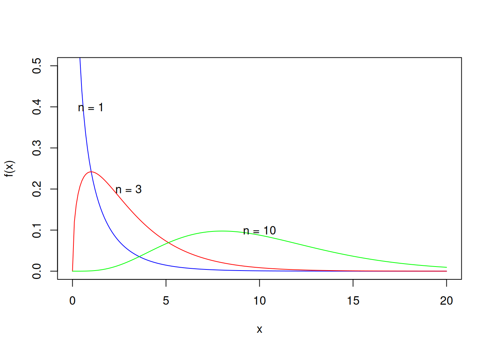
让我们重新考查 练习 5.27，这次假设目标位于二维平面上。
练习 5.28 当我们试图定位二维空间中的一个目标时，假设坐标误差是均值为 0、标准差为 2 的独立正态随机变量。求所选点与目标之间的距离超过 3 的概率。
答案 5.28. 如果 \(D\) 是距离，且 \(X_i, i = 1, 2\) 是坐标误差，那么：
\[ D^2 = X_1^2 + X_2^2 \]
由于 \(Z_i = X_i/2, i = 1, 2\) 是标准正态随机变量，我们得到：
\[ P\{D^2 > 9\} = P\{Z_1^2 + Z_2^2 > 9/4\} = P\{\chi_2^2 > 9/4\} = e^{-9/8} \approx .3247 \]
其中上述计算利用了自由度为 2 的卡方分布等同于参数为 1/2 的指数分布这一事实。 \(\blacksquare\)
由于自由度为 \(n\) 的卡方分布与参数 \(\alpha = n/2\) 且 \(\lambda = 1/2\) 的伽马分布相同，由此根据 方程式 5.35 和 方程式 5.36 得出服从该分布的随机变量 \(X\) 的均值和方差为：
\[ E[X] = n, \quad Var(X) = 2n \]
如果 \(Z\) 和 \(\chi_n^2\) 是独立的随机变量，\(Z\) 服从标准正态分布，\(\chi_n^2\) 服从自由度为 \(n\) 的卡方分布，那么由下式定义的随机变量 \(T_n\)：
\[ T_n = \frac{Z}{\sqrt{\chi_n^2 / n}} \]
被称为服从自由度为 \(n\) 的 \(t\)-分布 (t-distribution)。\(T_n\) 的密度函数图形在 图 5.13 中给出（对于 \(n = 1, 5\) 和 \(10\)）。
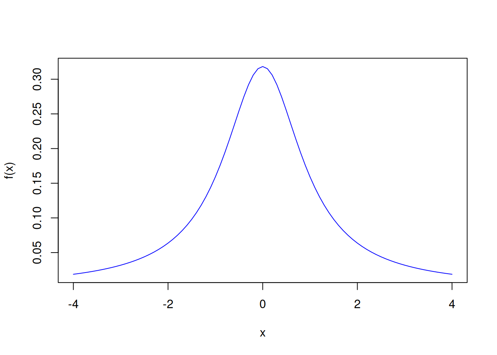
R 可用于获取 \(t\) 随机变量的概率以及 \(t_{\alpha, n}\) 的值。设 \(T_n\) 为自由度为 \(n\) 的 \(t\) 变量：
pt(x, n) 返回 \(P(T_n \leq x)\)qt(1 - alpha, n) 返回 \(t_{\alpha, n}\)练习 5.29 求 (a) \(P\{T_{12} \leq 1.4\}\) 以及 (b) \(t_{.025, 9}\)。
::: {#sol-5_8_5} R 产生结果为：
如果一个随机变量 \(X\) 的分布函数由下式给出，则称其服从参数为 \(\mu\) 和 \(v > 0\) 的逻辑分布（logistics distribution）：
\[ F(x) = \frac{e^{(x-\mu)/v}}{1 + e^{(x-\mu)/v}}, \quad -\infty < x < \infty \]
对 \(F(x) = 1 - 1/(1 + e^{(x-\mu)/v})\) 求导得出密度函数：
\[ f(x) = \frac{e^{(x-\mu)/v}}{v(1 + e^{(x-\mu)/v})^2}, \quad -\infty < x < \infty \]
为了计算逻辑随机变量的均值：
\[ E[X] = \int_{-\infty}^{\infty} x \frac{e^{(x-\mu)/v}}{v(1 + e^{(x-\mu)/v})^2} dx \]
进行变量替换 \(y = (x - \mu)/v\)。得到：
\[ \begin{align} E[X] &= v \int_{-\infty}^{\infty} y \frac{e^y}{(1 + e^y)^2} dy + \mu \int_{-\infty}^{\infty} \frac{e^y}{(1 + e^y)^2} dy \\ &= v \int_{-\infty}^{\infty} y \frac{e^y}{(1 + e^y)^2} dy + \mu \end{align} \tag{5.39}\]
其中最后一个等号利用了 \(e^y/(1 + e^y)^2\) 是参数为 \(\mu = 0, v = 1\) 的逻辑随机变量（这种随机变量被称为标准逻辑分布 (standard logistic)）的密度函数，因此其积分为 1。现在：
\[ \begin{align} \int_{-\infty}^{\infty} y \frac{e^y}{(1 + e^y)^2} dy &= \int_{-\infty}^{0} y \frac{e^y}{(1 + e^y)^2} dy + \int_{0}^{\infty} y \frac{e^y}{(1 + e^y)^2} dy \\ &= -\int_{0}^{\infty} x \frac{e^{-x}}{(1 + e^{-x})^2} dx + \int_{0}^{\infty} y \frac{e^y}{(1 + e^y)^2} dy \\ &= -\int_{0}^{\infty} x \frac{e^x}{(e^x + 1)^2} dx + \int_{0}^{\infty} y \frac{e^y}{(1 + e^y)^2} dy \\ &= 0 \end{align} \tag{5.40}\]
其中第二个等号是通过变量替换 \(x = -y\) 获得的，第三个等号是通过分子分母同乘 \(e^{2x}\) 获得的。由 方程式 5.39 和 方程式 5.40 得到：
\[ E[X] = \mu \]
因此 \(\mu\) 是逻辑分布的均值；\(v\) 被称为尺度参数。
表格 5.2 列出了 R 语言中一些常用分布的名称。
| 分布 | R 语言中的名称 |
|---|---|
| 参数为 \(n, p\) 的二项分布 | binom(n, p) |
| 参数为 \(\lambda\) 的泊松分布 | pois(lambda) |
| 参数为 \(N, M, n\) 的超几何分布 | hyper(N, M, n) |
| 标准正态分布 | norm |
| 参数为 \(\mu, \sigma^2\) 的正态分布 | norm(mu, sigma) |
| 自由度为 \(n\) 的卡方分布 | chisq(n) |
| 自由度为 \(n\) 的 \(T\)-分布 | t(n) |
| 自由度为 \(n, m\) 的 \(F\)-分布 | f(n, m) |
| 率为 1 的指数分布 | exp |
| 率为 \(\lambda\) 的指数分布 | exp(lambda) |
| 参数为 \(\alpha, \lambda\) 的伽马分布 | gamma(alpha, lambda) |
| 参数为 \(\mu, v\) 的逻辑分布 | logis(mu, v) |
| \((0, 1)\) 上的均匀分布 | unif |
| \((a, b)\) 上的均匀分布 | unif(a, b) |
表格 5.3 列出了一些 R 语言命令。
| 命令 | 功能 |
|---|---|
dname(x) |
密度函数或质量函数 |
pname(x) |
累积分布函数 |
qname(beta) |
分位数函数 |
plot(x, y) |
在适当定义的 \(x\) 和 \(y\) 下，将 \(y\) 绘制为 \(x\) 的函数 |
例如，要绘制自由度为 5 和 3 的 \(F\) 随机变量在 \(x = 0\) 到 \(x = 10\) 之间以 .01 为步长的密度曲线，请执行以下操作：
按回车键后会产生类似于 图 5.14 的输出。